PRROC Gating - NMA - Dynamic Borrowing
Anh Nguyen Duc
14 March, 2023
0.1 Utility functions
wald.ci <- function(x, n, ci.lev=.95) {
p <- x/n
se<- sqrt(p*(1-p)/n)
z <- qnorm((1+ci.lev)/2) %>% abs
p + c(-1,1)*z*se
}
#-------------------------------------------------------------------------------
lor.sd <- function(s1, n1, s2, n2) {
# get log OR and SD
f1 <- n1 - s1
f2 <- n2 - s2
# x - matrix of two columns of successes (s) and failures (f)
x <- rbind(c(s1, f1),
c(s2, f2))
D <- factor(c("s","f"), levels=c("f","s"))
m <- glm(x~D, family=binomial) %>% summary
m$coefficients[2,1:2]
}
#-------------------------------------------------------------------------------
lhr.sd <- function(hr, low, upp) {
# approx log HR and SD
loghr <- log(hr)
sd <- ((log(c(low,upp)) - loghr) / qnorm(.975)) %>% abs %>% sqrt %>% mean
return(c("loghr"=loghr, "sd"=sd))
}0.2 Posterior probability of ``true’’ response \(\ge\) a threshold
0.2.1 Load data
data.raw <- readxl::read_xlsx(path = 'PRROC.xlsx', range = cell_cols('A:M'))
data.use <- data.raw %>% dplyr::filter(dynamic_borrow_SAT=='Y')
data.use <- data.use[,c(1:3, data.use%>%ncol)]
data.use <- data.use[-2,,drop=F] # as per clinical team => remove Adavo
data.use %>% kbl() %>% kable_styling()| study | res_a | n_a | des |
|---|---|---|---|
| 1 | 1 | 34 | Konstantinopoulos PA, Lancet Oncol. 2020 |
0.2.2 WinBUGs model for binary EXNEX model with dynamic (stochastic) mixture weights
This is based on section 5.3 of https://onlinelibrary.wiley.com/action/downloadSupplement?doi=10.1002%2Fpst.1730&file=pst1730-sup-0001-supplementary.pdf
Original paper is https://onlinelibrary.wiley.com/doi/epdf/10.1002/pst.1730
### Model definition when mixture weights are stochastic
binary_exnex_model_dw <- function() {
## Data to be specify in the input
#-------------------------------------------------------------------------------
# Nexch - number of exchangeable components
# Nmix - number of mixture weights and must be Nexch+1
# Nstrata - number of strata e.g. studies or cohort (in platform trial)
# pMix - matrix of Nmix * Nstrata mixture weights (each col summing up to 1)
# n - vector of Nstrata elements storing patient numbers for each stratum
# r - vector of Nstrata elements storing response numbers for each stratum
# mu.mean - vector of Nexch prior mean(s)
# mu.prec - vector of Nexch prior precision(s)
# tau.HN.scale - scale parameter of Half-Normal prior for tau
# ------- no longer needed -----------------------------------------------------
# nex.mean - prior mean for non-exchangeable component
# nex.prec - prior precision for non-exchangeable component
# ------- end of no longer needed ----------------------------------------------
# p.cut - clinically relevant threshold for response rate to compare against
## Parameter(s) to be monitored
# p - posterior response rate
# logit_p - logit(p) i.e. log odd
# p.success - posterior indicator if p > p.cut
# p.failure - posterior indicator if p < p.cut
# pMix - posterior mixture weight to test for "exchangeability"
#-------------------------------------------------------------------------------
# prior distributions for EX-parameters
for (jj in 1:Nexch) {
mu[jj] ~dnorm(mu.mean[jj],mu.prec[jj])
prior.tau.prec[jj] <- pow(tau.HN.scale[jj],-2)
tau[jj] ~ dnorm(0,prior.tau.prec[jj]);I(0.001,)
prec.tau[jj] <- pow(tau[jj],-2)
}
# log-odds parameters under EX
for (jj in 1:Nexch) {
for (j in 1:Nstrata) {
re[jj,j] ~ dnorm(0,prec.tau[jj])
LogOdds[jj,j] <- mu[jj]+re[jj,j]
}
}
# log-odds parameters under NEX
for (j in 1:Nstrata) {
#p_Nmix[j] ~ dbeta(2,2) # slight mod to have flat prior
#LogOdds[Nmix,j] ~ dnorm(nex.mean,nex.prec)#<- logit(p_Nmix[j])#
# LogOdds[Nmix,j] ~ dt(0, 2, 1) #Student's t-distribution becomes the Cauchy distribution when the degrees of freedom is equal to one
LogOdds[Nmix,j] ~ dunif(-20, 20)
}
# latent mixture indicators:
# exch.index: categorial 1,...,Nmix=Nexch+1
# exch: Nstrata x Nmix matrix of 0/1 elements
for (j in 1:Nstrata) {
exch.index[j] ~ dcat(pMix[1:Nmix,j])
for (jj in 1:Nmix) {
exch[j,jj] <- equals(exch.index[j],jj)
}
}
# pick theta
for (j in 1:Nstrata) {
theta[j] <- LogOdds[exch.index[j],j]
}
# likelihood part
for (i in 1:Nstrata) {
logit( p[i] ) <- theta[i]
p.success[i] <- step(p[i]-p.cut)
p.failure[i] <- step(p.cut-p[i])
r[i] ~ dbin(p[i],n[i])
logit_p[i] <- theta[i]
}
# normalized mixture weights
for (i in 1:Nstrata) {
for (j in 1:Nmix) {
pMix0[j,i] ~ dbeta(2, 2)
}
for (j in 1:Nmix) {
pMix[j,i] <- pMix0[j,i] / sum(pMix0[,i])
}
}
} # end of binary_exnex_model_dw
write.model(binary_exnex_model_dw, 'binary_exnex_model_dw.bug')
### Parameters to monitor
parameters_binary_exnex_model_dw <- c('p', 'logit_p', 'pMix', 'p.success', 'p.failure')
### Data
## EX part
mu.mean <- c(logit(.05), logit(.3)) # ex prior for hyper meanis centered at logit(0.05)
# ex precision for hyperpar mean based on (23) of https://onlinelibrary.wiley.com/action/downloadSupplement?doi=10.1002%2Fpst.1730&file=pst1730-sup-0001-supplementary.pdf
mu.prec <- 1/sqrt( ( 1/inv.logit(mu.mean) + 1/(1-inv.logit(mu.mean)) )) # still missing s^2 but this would only make the prior more non-informative
Nexch <- mu.mean %>% length
tau.HN.scale <- rep(1, Nexch)
# ## NEX part - no longer needed
# nex.mean<-logit(.15) # prior mean for nex part
#
# # prior precision for nex part based on (20) of https://onlinelibrary.wiley.com/action/downloadSupplement?doi=10.1002%2Fpst.1730&file=pst1730-sup-0001-supplementary.pdf
# nex.prec <- 1/sqrt( 1/inv.logit(nex.mean) + 1/(1-inv.logit(nex.mean)) * 1e5 )
p.cut<-.15
Nmix <- Nexch + 1
obs.orrs <- c(.05, .1, .15, .2, .25, .3, .35) # would-be observed ORR from expansion cohort
npt <- 25 # number of patients from expansion cohort
data_binary_exnex_model_dw <- binary_exnex_jag_dw <- binary_exnex_mcmc_dw <- list()
## Run JAGs
for (id in 1:length(obs.orrs)) {
print(paste0('Observed ORR = ', obs.orrs[id]))
orr <- obs.orrs[id]
n <- c(data.use$n_a, npt)
r <- c(data.use$res_a, orr*npt) %>% round
Nstrata <- n %>% length
data_binary_exnex_model_dw[[id]]<- list(Nexch=Nexch, Nmix=Nmix, Nstrata=Nstrata,
n=n, r=r,
mu.mean=mu.mean, mu.prec=mu.prec,
tau.HN.scale=tau.HN.scale,
# nex.mean=nex.mean, nex.prec=nex.prec,
p.cut=p.cut
)
### Inits
inits_binary_exnex_model_dw <- function() {
pMix0 <- rbeta(Nmix*Nstrata, 2, 2) %>% matrix(nrow=Nstrata) %>% t
for (nc in 1:ncol(pMix0)) {
pMix0[,nc] <- pMix0[,nc] / sum(pMix0[,nc])
}
list(
"mu"=rnorm(Nexch),
"tau"=rnorm(Nexch) %>% abs,
"pMix0"=pMix0
)
} # end of inits_binary_exnex_model_dw
# JAGS
set.seed(36)
binary_exnex_jag_dw[[id]] <- jags(data = data_binary_exnex_model_dw[[id]],
inits = inits_binary_exnex_model_dw,
parameters.to.save = parameters_binary_exnex_model_dw,
model.file = "binary_exnex_model_dw.bug",
n.chains=3, n.iter=1e4, n.burnin=5e3)
# print(binary_exnex_jag_dw)
binary_exnex_mcmc_dw[[id]] <- binary_exnex_jag_dw[[id]] %>% as.mcmc.rjags
binary_exnex_mcmc_dw[[id]] %>% summary %>% print
### Credible interval for selected parameters
mcmcplots::caterplot(binary_exnex_jag_dw[[id]], parms = c('p'))
### Density plot for posterior logit alone
par(ask=F)
mcmcplots::denplot(binary_exnex_jag_dw[[id]], parms = c(paste0('logit_p[', Nstrata, ']')), collapse = T, lwd=2,xlim=c(-15,15), style ='plain', main='Posterior distribution of true ORR', frame.plot=F)
} # end of for (id in 1:length(obs.orrs))## [1] "Observed ORR = 0.05"## module glm loaded## Compiling model graph
## Resolving undeclared variables
## Allocating nodes
## Graph information:
## Observed stochastic nodes: 2
## Unobserved stochastic nodes: 18
## Total graph size: 77
##
## Initializing model
##
##
## Iterations = 1:4996
## Thinning interval = 5
## Number of chains = 3
## Sample size per chain = 1000
##
## 1. Empirical mean and standard deviation for each variable,
## plus standard error of the mean:
##
## Mean SD Naive SE Time-series SE
## deviance 5.40891 1.65451 0.0302071 0.0405664
## logit_p[1] -3.55217 0.92344 0.0168595 0.0218781
## logit_p[2] -3.36100 0.94676 0.0172853 0.0205233
## p[1] 0.03805 0.02899 0.0005294 0.0007007
## p[2] 0.04618 0.03686 0.0006729 0.0008091
## p.failure[1] 0.99600 0.06313 0.0011526 0.0011523
## p.failure[2] 0.98000 0.14002 0.0025565 0.0029591
## p.success[1] 0.00400 0.06313 0.0011526 0.0011523
## p.success[2] 0.02000 0.14002 0.0025565 0.0029591
## pMix[1,1] 0.35455 0.13288 0.0024260 0.0026808
## pMix[2,1] 0.33118 0.13062 0.0023848 0.0024783
## pMix[3,1] 0.31426 0.12753 0.0023284 0.0024252
## pMix[1,2] 0.35608 0.13465 0.0024584 0.0023568
## pMix[2,2] 0.33192 0.12944 0.0023633 0.0024016
## pMix[3,2] 0.31200 0.12986 0.0023710 0.0023706
##
## 2. Quantiles for each variable:
##
## 2.5% 25% 50% 75% 97.5%
## deviance 3.960648 4.26187 4.86395 5.96561 9.9538
## logit_p[1] -5.676582 -4.03948 -3.45771 -2.91944 -2.0763
## logit_p[2] -5.580906 -3.87456 -3.26574 -2.72093 -1.7916
## p[1] 0.003414 0.01730 0.03054 0.05120 0.1114
## p[2] 0.003755 0.02034 0.03677 0.06175 0.1429
## p.failure[1] 1.000000 1.00000 1.00000 1.00000 1.0000
## p.failure[2] 1.000000 1.00000 1.00000 1.00000 1.0000
## p.success[1] 0.000000 0.00000 0.00000 0.00000 0.0000
## p.success[2] 0.000000 0.00000 0.00000 0.00000 0.0000
## pMix[1,1] 0.107365 0.26329 0.35257 0.43893 0.6251
## pMix[2,1] 0.083238 0.23916 0.33121 0.41734 0.5996
## pMix[3,1] 0.072005 0.22568 0.31578 0.39795 0.5651
## pMix[1,2] 0.101664 0.26608 0.35557 0.43877 0.6414
## pMix[2,2] 0.080022 0.24111 0.33095 0.41836 0.5899
## pMix[3,2] 0.068003 0.22138 0.31155 0.39788 0.5784

## [1] "Observed ORR = 0.1"
## Compiling model graph
## Resolving undeclared variables
## Allocating nodes
## Graph information:
## Observed stochastic nodes: 2
## Unobserved stochastic nodes: 18
## Total graph size: 77
##
## Initializing model
##
##
## Iterations = 1:4996
## Thinning interval = 5
## Number of chains = 3
## Sample size per chain = 1000
##
## 1. Empirical mean and standard deviation for each variable,
## plus standard error of the mean:
##
## Mean SD Naive SE Time-series SE
## deviance 6.204363 1.66582 0.0304135 0.0351299
## logit_p[1] -3.413526 0.92389 0.0168678 0.0201537
## logit_p[2] -2.665888 0.73214 0.0133670 0.0160422
## p[1] 0.042882 0.03095 0.0005651 0.0006416
## p[2] 0.078446 0.04843 0.0008842 0.0010444
## p.failure[1] 0.992667 0.08533 0.0015580 0.0017515
## p.failure[2] 0.913667 0.28090 0.0051286 0.0055556
## p.success[1] 0.007333 0.08533 0.0015580 0.0017515
## p.success[2] 0.086333 0.28090 0.0051286 0.0055556
## pMix[1,1] 0.348378 0.13096 0.0023911 0.0024459
## pMix[2,1] 0.334049 0.13458 0.0024571 0.0025425
## pMix[3,1] 0.317573 0.12862 0.0023482 0.0023483
## pMix[1,2] 0.346878 0.12935 0.0023616 0.0024901
## pMix[2,2] 0.343589 0.12888 0.0023529 0.0022920
## pMix[3,2] 0.309533 0.12797 0.0023364 0.0023459
##
## 2. Quantiles for each variable:
##
## 2.5% 25% 50% 75% 97.5%
## deviance 4.542747 5.06387 5.68589 6.77131 10.8316
## logit_p[1] -5.612560 -3.89227 -3.27864 -2.78463 -1.9795
## logit_p[2] -4.265772 -3.10990 -2.61042 -2.15657 -1.3603
## p[1] 0.003638 0.01999 0.03631 0.05816 0.1214
## p[2] 0.013847 0.04270 0.06847 0.10372 0.2042
## p.failure[1] 1.000000 1.00000 1.00000 1.00000 1.0000
## p.failure[2] 0.000000 1.00000 1.00000 1.00000 1.0000
## p.success[1] 0.000000 0.00000 0.00000 0.00000 0.0000
## p.success[2] 0.000000 0.00000 0.00000 0.00000 1.0000
## pMix[1,1] 0.089772 0.26010 0.34750 0.43200 0.6174
## pMix[2,1] 0.078438 0.24481 0.32807 0.41977 0.6124
## pMix[3,1] 0.075354 0.22788 0.31709 0.40284 0.5836
## pMix[1,2] 0.098039 0.25829 0.34730 0.42938 0.6020
## pMix[2,2] 0.097866 0.25234 0.34568 0.43020 0.5977
## pMix[3,2] 0.066213 0.21940 0.31173 0.39423 0.5736

## [1] "Observed ORR = 0.15"
## Compiling model graph
## Resolving undeclared variables
## Allocating nodes
## Graph information:
## Observed stochastic nodes: 2
## Unobserved stochastic nodes: 18
## Total graph size: 77
##
## Initializing model
##
##
## Iterations = 1:4996
## Thinning interval = 5
## Number of chains = 3
## Sample size per chain = 1000
##
## 1. Empirical mean and standard deviation for each variable,
## plus standard error of the mean:
##
## Mean SD Naive SE Time-series SE
## deviance 7.17978 1.96492 0.0358744 0.0460277
## logit_p[1] -3.44547 1.04903 0.0191525 0.0247926
## logit_p[2] -1.84078 0.58719 0.0107205 0.0138232
## p[1] 0.04449 0.03468 0.0006331 0.0007929
## p[2] 0.15093 0.07084 0.0012933 0.0016348
## p.failure[1] 0.99000 0.09952 0.0018169 0.0018670
## p.failure[2] 0.55267 0.49730 0.0090794 0.0114215
## p.success[1] 0.01000 0.09952 0.0018169 0.0018670
## p.success[2] 0.44733 0.49730 0.0090794 0.0114215
## pMix[1,1] 0.35481 0.13349 0.0024371 0.0025288
## pMix[2,1] 0.32750 0.13281 0.0024247 0.0023612
## pMix[3,1] 0.31769 0.12843 0.0023448 0.0022972
## pMix[1,2] 0.33333 0.13065 0.0023854 0.0023850
## pMix[2,2] 0.35348 0.13265 0.0024218 0.0023865
## pMix[3,2] 0.31319 0.13014 0.0023760 0.0023345
##
## 2. Quantiles for each variable:
##
## 2.5% 25% 50% 75% 97.5%
## deviance 5.123560 5.74189 6.62638 8.10734 12.2263
## logit_p[1] -5.882755 -4.03267 -3.28065 -2.69228 -1.8979
## logit_p[2] -3.082508 -2.21053 -1.80978 -1.42804 -0.7770
## p[1] 0.002779 0.01742 0.03624 0.06343 0.1303
## p[2] 0.043835 0.09881 0.14066 0.19341 0.3150
## p.failure[1] 1.000000 1.00000 1.00000 1.00000 1.0000
## p.failure[2] 0.000000 0.00000 1.00000 1.00000 1.0000
## p.success[1] 0.000000 0.00000 0.00000 0.00000 0.0000
## p.success[2] 0.000000 0.00000 0.00000 1.00000 1.0000
## pMix[1,1] 0.096853 0.26724 0.35607 0.44191 0.6268
## pMix[2,1] 0.081383 0.23486 0.32967 0.41268 0.5988
## pMix[3,1] 0.077989 0.22464 0.31688 0.40410 0.5814
## pMix[1,2] 0.081298 0.24445 0.33829 0.41981 0.5891
## pMix[2,2] 0.108882 0.26446 0.35313 0.43909 0.6230
## pMix[3,2] 0.064338 0.22085 0.31508 0.39821 0.5780

## [1] "Observed ORR = 0.2"
## Compiling model graph
## Resolving undeclared variables
## Allocating nodes
## Graph information:
## Observed stochastic nodes: 2
## Unobserved stochastic nodes: 18
## Total graph size: 77
##
## Initializing model
##
##
## Iterations = 1:4996
## Thinning interval = 5
## Number of chains = 3
## Sample size per chain = 1000
##
## 1. Empirical mean and standard deviation for each variable,
## plus standard error of the mean:
##
## Mean SD Naive SE Time-series SE
## deviance 7.35514 2.02290 0.0369329 0.0422212
## logit_p[1] -3.46728 1.04617 0.0191004 0.0236621
## logit_p[2] -1.53025 0.53045 0.0096846 0.0119137
## p[1] 0.04424 0.03638 0.0006643 0.0008317
## p[2] 0.19046 0.07716 0.0014087 0.0017369
## p.failure[1] 0.98233 0.13176 0.0024056 0.0028396
## p.failure[2] 0.33467 0.47195 0.0086166 0.0106846
## p.success[1] 0.01767 0.13176 0.0024056 0.0028396
## p.success[2] 0.66533 0.47195 0.0086166 0.0106846
## pMix[1,1] 0.35205 0.13254 0.0024199 0.0024205
## pMix[2,1] 0.32776 0.13214 0.0024126 0.0024112
## pMix[3,1] 0.32020 0.12957 0.0023657 0.0023630
## pMix[1,2] 0.33183 0.13712 0.0025035 0.0025650
## pMix[2,2] 0.35664 0.13243 0.0024178 0.0024782
## pMix[3,2] 0.31153 0.13210 0.0024118 0.0024634
##
## 2. Quantiles for each variable:
##
## 2.5% 25% 50% 75% 97.5%
## deviance 5.275636 5.80810 6.74718 8.28039 12.5888
## logit_p[1] -5.890092 -4.03528 -3.34279 -2.74249 -1.8149
## logit_p[2] -2.636961 -1.88531 -1.50511 -1.16848 -0.5412
## p[1] 0.002759 0.01737 0.03413 0.06051 0.1400
## p[2] 0.066797 0.13178 0.18166 0.23713 0.3679
## p.failure[1] 1.000000 1.00000 1.00000 1.00000 1.0000
## p.failure[2] 0.000000 0.00000 0.00000 1.00000 1.0000
## p.success[1] 0.000000 0.00000 0.00000 0.00000 0.0000
## p.success[2] 0.000000 0.00000 1.00000 1.00000 1.0000
## pMix[1,1] 0.086702 0.26194 0.35138 0.43998 0.6157
## pMix[2,1] 0.084782 0.23357 0.32305 0.41736 0.5989
## pMix[3,1] 0.070820 0.22937 0.31903 0.40611 0.5828
## pMix[1,2] 0.080962 0.23723 0.32662 0.41707 0.6196
## pMix[2,2] 0.102896 0.26584 0.35653 0.44466 0.6246
## pMix[3,2] 0.071394 0.21713 0.30839 0.39977 0.5828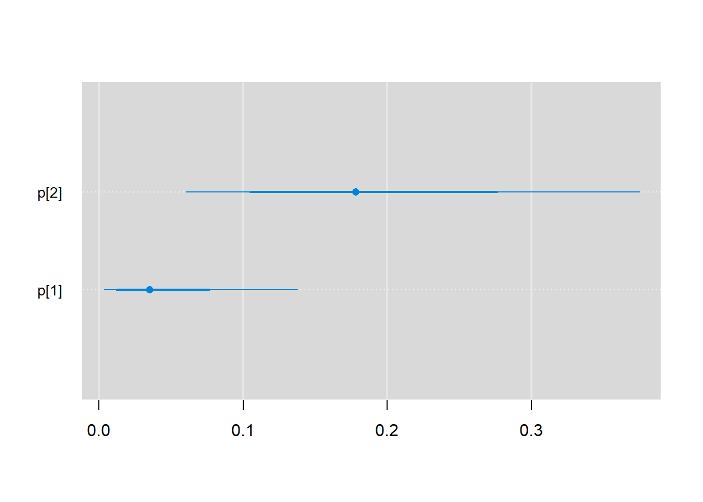
## [1] "Observed ORR = 0.25"
## Compiling model graph
## Resolving undeclared variables
## Allocating nodes
## Graph information:
## Observed stochastic nodes: 2
## Unobserved stochastic nodes: 18
## Total graph size: 77
##
## Initializing model
##
##
## Iterations = 1:4996
## Thinning interval = 5
## Number of chains = 3
## Sample size per chain = 1000
##
## 1. Empirical mean and standard deviation for each variable,
## plus standard error of the mean:
##
## Mean SD Naive SE Time-series SE
## deviance 7.48787 2.08649 0.0380940 0.0443264
## logit_p[1] -3.45371 1.05788 0.0193141 0.0229080
## logit_p[2] -1.26886 0.49080 0.0089608 0.0111935
## p[1] 0.04497 0.03679 0.0006717 0.0008195
## p[2] 0.23038 0.08235 0.0015036 0.0018879
## p.failure[1] 0.98300 0.12929 0.0023605 0.0027772
## p.failure[2] 0.16667 0.37274 0.0068053 0.0077317
## p.success[1] 0.01700 0.12929 0.0023605 0.0027772
## p.success[2] 0.83333 0.37274 0.0068053 0.0077317
## pMix[1,1] 0.35547 0.13617 0.0024861 0.0024839
## pMix[2,1] 0.32396 0.13206 0.0024111 0.0027933
## pMix[3,1] 0.32057 0.13524 0.0024690 0.0024580
## pMix[1,2] 0.32685 0.13239 0.0024170 0.0024580
## pMix[2,2] 0.35779 0.13211 0.0024120 0.0024116
## pMix[3,2] 0.31536 0.12807 0.0023382 0.0024229
##
## 2. Quantiles for each variable:
##
## 2.5% 25% 50% 75% 97.5%
## deviance 5.413066 6.00181 6.84008 8.26786 13.0879
## logit_p[1] -5.935035 -4.03512 -3.30455 -2.68149 -1.8277
## logit_p[2] -2.286023 -1.58036 -1.25037 -0.92971 -0.3653
## p[1] 0.002638 0.01738 0.03542 0.06407 0.1385
## p[2] 0.092287 0.17074 0.22264 0.28298 0.4097
## p.failure[1] 1.000000 1.00000 1.00000 1.00000 1.0000
## p.failure[2] 0.000000 0.00000 0.00000 0.00000 1.0000
## p.success[1] 0.000000 0.00000 0.00000 0.00000 0.0000
## p.success[2] 0.000000 1.00000 1.00000 1.00000 1.0000
## pMix[1,1] 0.092613 0.26317 0.35383 0.44789 0.6357
## pMix[2,1] 0.083530 0.22950 0.32376 0.41302 0.5936
## pMix[3,1] 0.069595 0.22605 0.31866 0.40789 0.6087
## pMix[1,2] 0.079582 0.23330 0.32769 0.41439 0.5902
## pMix[2,2] 0.109092 0.27165 0.35372 0.43925 0.6427
## pMix[3,2] 0.078256 0.22130 0.31536 0.39830 0.5824

## [1] "Observed ORR = 0.3"
## Compiling model graph
## Resolving undeclared variables
## Allocating nodes
## Graph information:
## Observed stochastic nodes: 2
## Unobserved stochastic nodes: 18
## Total graph size: 77
##
## Initializing model
##
##
## Iterations = 1:4996
## Thinning interval = 5
## Number of chains = 3
## Sample size per chain = 1000
##
## 1. Empirical mean and standard deviation for each variable,
## plus standard error of the mean:
##
## Mean SD Naive SE Time-series SE
## deviance 7.466788 1.96884 0.0359460 0.042171
## logit_p[1] -3.551778 1.03825 0.0189557 0.025276
## logit_p[2] -0.818371 0.43916 0.0080179 0.009643
## p[1] 0.040314 0.03220 0.0005879 0.000748
## p[2] 0.313620 0.09019 0.0016467 0.001980
## p.failure[1] 0.992667 0.08533 0.0015580 0.001622
## p.failure[2] 0.022333 0.14779 0.0026983 0.002908
## p.success[1] 0.007333 0.08533 0.0015580 0.001622
## p.success[2] 0.977667 0.14779 0.0026983 0.002908
## pMix[1,1] 0.359783 0.13050 0.0023826 0.002363
## pMix[2,1] 0.318758 0.13059 0.0023843 0.002385
## pMix[3,1] 0.321459 0.12864 0.0023485 0.002349
## pMix[1,2] 0.324548 0.13060 0.0023844 0.002418
## pMix[2,2] 0.359579 0.12933 0.0023613 0.002618
## pMix[3,2] 0.315873 0.12685 0.0023160 0.002367
##
## 2. Quantiles for each variable:
##
## 2.5% 25% 50% 75% 97.5%
## deviance 5.571193 6.07977 6.88873 8.19544 12.831103
## logit_p[1] -5.943246 -4.09490 -3.39642 -2.82595 -1.955430
## logit_p[2] -1.713157 -1.10546 -0.80486 -0.52270 0.009368
## p[1] 0.002617 0.01638 0.03241 0.05594 0.123963
## p[2] 0.152755 0.24872 0.30899 0.37222 0.502342
## p.failure[1] 1.000000 1.00000 1.00000 1.00000 1.000000
## p.failure[2] 0.000000 0.00000 0.00000 0.00000 0.000000
## p.success[1] 0.000000 0.00000 0.00000 0.00000 0.000000
## p.success[2] 1.000000 1.00000 1.00000 1.00000 1.000000
## pMix[1,1] 0.108132 0.27487 0.35841 0.44263 0.636067
## pMix[2,1] 0.074874 0.22637 0.32045 0.40570 0.587241
## pMix[3,1] 0.077171 0.23100 0.32179 0.40537 0.582908
## pMix[1,2] 0.079512 0.23080 0.32443 0.41091 0.593610
## pMix[2,2] 0.113047 0.27360 0.35911 0.44386 0.625921
## pMix[3,2] 0.073088 0.22573 0.31724 0.39713 0.574798 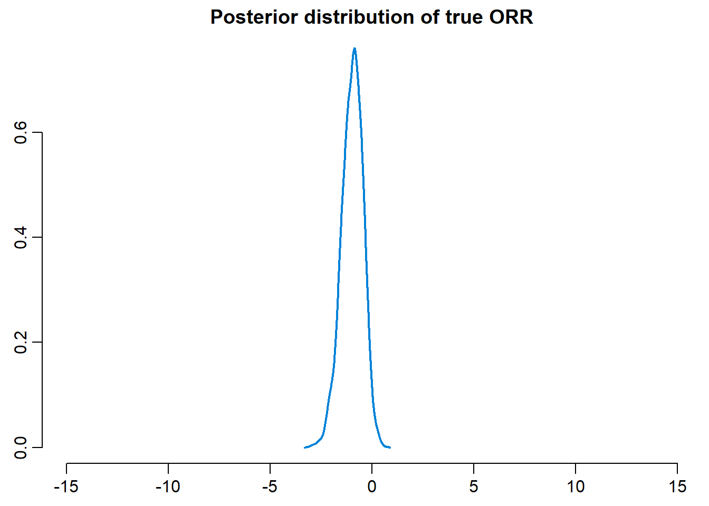
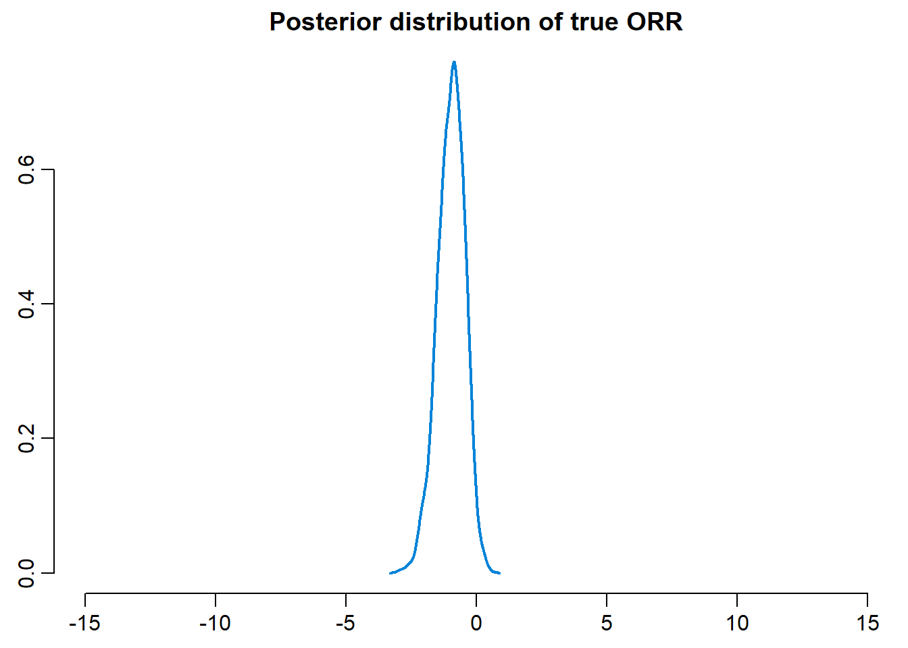
## [1] "Observed ORR = 0.35"
## Compiling model graph
## Resolving undeclared variables
## Allocating nodes
## Graph information:
## Observed stochastic nodes: 2
## Unobserved stochastic nodes: 18
## Total graph size: 77
##
## Initializing model
##
##
## Iterations = 1:4996
## Thinning interval = 5
## Number of chains = 3
## Sample size per chain = 1000
##
## 1. Empirical mean and standard deviation for each variable,
## plus standard error of the mean:
##
## Mean SD Naive SE Time-series SE
## deviance 7.534901 2.01048 0.0367061 0.0456141
## logit_p[1] -3.583156 1.06184 0.0193865 0.0252826
## logit_p[2] -0.654229 0.42414 0.0077438 0.0098824
## p[1] 0.039587 0.03225 0.0005889 0.0007642
## p[2] 0.348115 0.09195 0.0016787 0.0021372
## p.failure[1] 0.991333 0.09271 0.0016926 0.0017638
## p.failure[2] 0.007667 0.08724 0.0015927 0.0017355
## p.success[1] 0.008667 0.09271 0.0016926 0.0017638
## p.success[2] 0.992333 0.08724 0.0015927 0.0017355
## pMix[1,1] 0.358095 0.12930 0.0023607 0.0023593
## pMix[2,1] 0.323075 0.12884 0.0023523 0.0024514
## pMix[3,1] 0.318830 0.12710 0.0023205 0.0023210
## pMix[1,2] 0.328016 0.13022 0.0023775 0.0025077
## pMix[2,2] 0.359833 0.12725 0.0023232 0.0023728
## pMix[3,2] 0.312151 0.12757 0.0023292 0.0023745
##
## 2. Quantiles for each variable:
##
## 2.5% 25% 50% 75% 97.5%
## deviance 5.633522 6.13472 6.93694 8.22250 12.8855
## logit_p[1] -5.966614 -4.18943 -3.42161 -2.82708 -1.9587
## logit_p[2] -1.531805 -0.92951 -0.64474 -0.37403 0.1548
## p[1] 0.002556 0.01493 0.03163 0.05588 0.1236
## p[2] 0.177730 0.28302 0.34418 0.40757 0.5386
## p.failure[1] 1.000000 1.00000 1.00000 1.00000 1.0000
## p.failure[2] 0.000000 0.00000 0.00000 0.00000 0.0000
## p.success[1] 0.000000 0.00000 0.00000 0.00000 0.0000
## p.success[2] 1.000000 1.00000 1.00000 1.00000 1.0000
## pMix[1,1] 0.113994 0.26819 0.35738 0.44470 0.6268
## pMix[2,1] 0.083666 0.23421 0.32439 0.40807 0.5780
## pMix[3,1] 0.081390 0.23046 0.31891 0.40540 0.5761
## pMix[1,2] 0.081943 0.23529 0.32838 0.41569 0.5806
## pMix[2,2] 0.111109 0.27621 0.36071 0.43906 0.6229
## pMix[3,2] 0.077098 0.22014 0.31440 0.39462 0.5842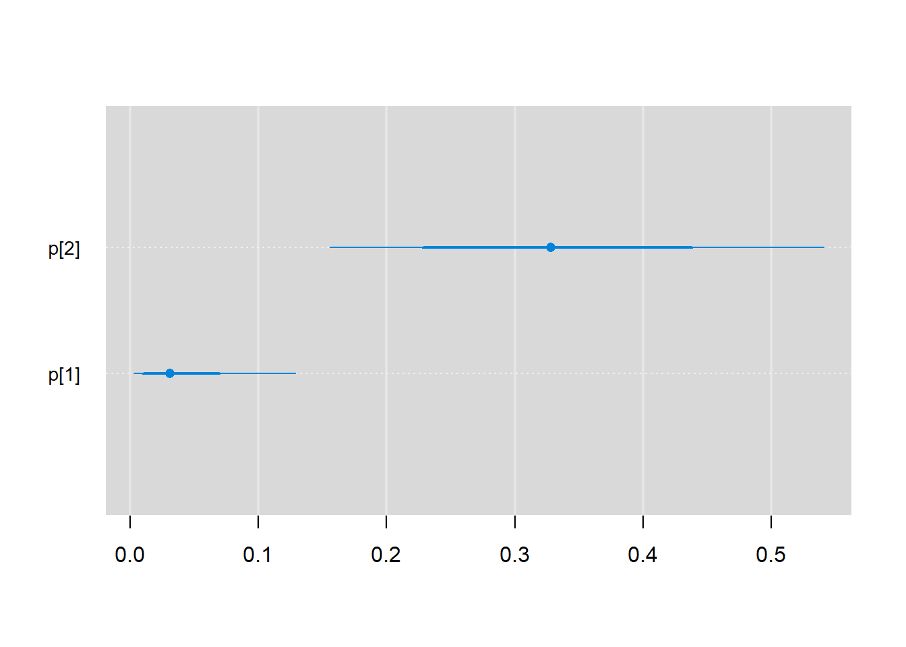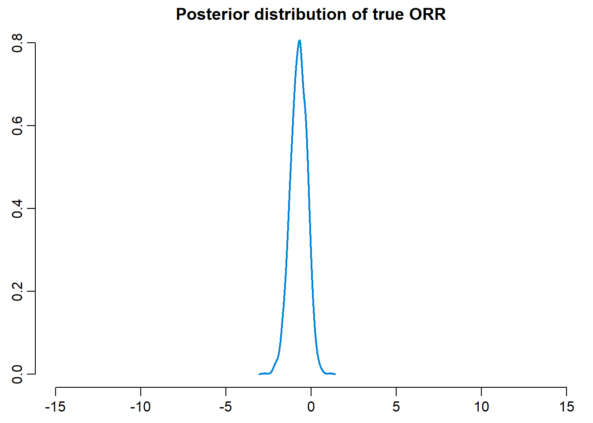
### Run MCMC0.2.3 WinBUGs model for binary EXNEX model with fixed mixture weights
This is based on section 5.3 of https://onlinelibrary.wiley.com/action/downloadSupplement?doi=10.1002%2Fpst.1730&file=pst1730-sup-0001-supplementary.pdf
Original paper is https://onlinelibrary.wiley.com/doi/epdf/10.1002/pst.1730
### Model definition when mixture weights are stochastic
binary_exnex_model_fw <- function() {
## Data to be specify in the input
#-------------------------------------------------------------------------------
# Nexch - number of exchangeable components
# Nmix - number of mixture weights and must be Nexch+1
# Nstrata - number of strata e.g. studies or cohort (in platform trial)
# n - vector of Nstrata elements storing patient numbers for each stratum
# r - vector of Nstrata elements storing response numbers for each stratum
# mu.mean - vector of Nexch prior mean(s)
# mu.prec - vector of Nexch prior precision(s)
# tau.HN.scale - scale parameter of Half-Normal prior for tau
# ------- no longer needed -----------------------------------------------------
# nex.mean - prior mean for non-exchangeable component
# nex.prec - prior precision for non-exchangeable component
# ------- end of no longer needed ----------------------------------------------
# p.cut - clinically relevant threshold for response rate to compare against
## Parameter(s) to be monitored
# p - posterior response rate
# logit_p - logit(p) i.e. log odd
# p.success - posterior indicator if p > p.cut
# p.failure - posterior indicator if p < p.cut
# pMix - posterior mixture weight to test for "exchangeability"
#-------------------------------------------------------------------------------
# prior distributions for EX-parameters
for (jj in 1:Nexch) {
mu[jj] ~dnorm(mu.mean[jj],mu.prec[jj])
prior.tau.prec[jj] <- pow(tau.HN.scale[jj],-2)
tau[jj] ~ dnorm(0,prior.tau.prec[jj]);I(0.001,)
prec.tau[jj] <- pow(tau[jj],-2)
}
# log-odds parameters under EX
for (jj in 1:Nexch) {
for (j in 1:Nstrata) {
re[jj,j] ~ dnorm(0,prec.tau[jj])
LogOdds[jj,j] <- mu[jj]+re[jj,j]
}
}
# log-odds parameters under NEX
for (j in 1:Nstrata) {
#p_Nmix[j] ~ dbeta(2,2) # slight mod to have flat prior
#LogOdds[Nmix,j] ~ dnorm(nex.mean,nex.prec)#<- logit(p_Nmix[j])#
# LogOdds[Nmix,j] ~ dt(0, 2, 1) #Student's t-distribution becomes the Cauchy distribution when the degrees of freedom is equal to one
LogOdds[Nmix,j] ~ dunif(-20, 20)
}
# latent mixture indicators:
# exch.index: categorial 1,...,Nmix=Nexch+1
# exch: Nstrata x Nmix matrix of 0/1 elements
for (j in 1:Nstrata) {
exch.index[j] ~ dcat(pMix[1:Nmix,j])
for (jj in 1:Nmix) {
exch[j,jj] <- equals(exch.index[j],jj)
}
}
# pick theta
for (j in 1:Nstrata) {
theta[j] <- LogOdds[exch.index[j],j]
}
# likelihood part
for (i in 1:Nstrata) {
logit( p[i] ) <- theta[i]
p.success[i] <- step(p[i]-p.cut)
p.failure[i] <- step(p.cut-p[i])
r[i] ~ dbin(p[i],n[i])
logit_p[i] <- theta[i]
}
} # end of binary_exnex_model_fw
write.model(binary_exnex_model_fw, 'binary_exnex_model_fw.bug')
### Parameters to monitor
parameters_binary_exnex_model_fw <- c('p', 'logit_p', 'p.success', 'p.failure')
### Data similar to above with only difference in pMix
# data_binary_exnex_model_fw_pes <- binary_exnex_jag_fw_pes <- binary_exnex_mcmc_fw_pes <-
# data_binary_exnex_model_fw_opt <- binary_exnex_jag_fw_opt <- binary_exnex_mcmc_fw_opt <-
# data_binary_exnex_model_fw_neu <- binary_exnex_jag_fw_neu <- binary_exnex_mcmc_fw_neu <-list()
data_binary_exnex_model_fw <- binary_exnex_jag_fw <- binary_exnex_mcmc_fw <- list()
priors <- c('Pessimistic', 'Optimistic', 'Neutral')
colors <- c('gray', 'green', 'blue')
nsim <- 2e4
## Run JAGs
for (prior in priors) {
data_binary_exnex_model_fw[[prior]] <- binary_exnex_jag_fw[[prior]] <-
binary_exnex_mcmc_fw[[prior]] <- list()
pMix <-
case_when(
prior=='Pessimistic' ~ c(1,0,0),
prior=='Optimistic' ~ c(0,1,0),
prior=='Neutral' ~ c(0,0,1)
)
pMix <- pMix %>% rep(Nmix) %>% matrix(nrow=Nmix, byrow = F)
for (id in 1:length(obs.orrs)) {
print(paste0(prior, 'Prior and Observed ORR = ', obs.orrs[id]))
orr <- obs.orrs[id]
n <- c(data.use$n_a, npt)
r <- c(data.use$res_a, orr*npt) %>% round
Nstrata <- n %>% length
data_binary_exnex_model_fw[[prior]][[id]] <- list(
pMix=pMix, Nexch=Nexch, Nmix=Nmix, Nstrata=Nstrata, n=n, r=r,
mu.mean=mu.mean, mu.prec=mu.prec, tau.HN.scale=tau.HN.scale,
# nex.mean=nex.mean, nex.prec=nex.prec,
p.cut=p.cut
)
### Inits
inits_binary_exnex_model_fw <- function() {
list(
"mu"=rnorm(Nexch),
"tau"=rnorm(Nexch) %>% abs
)
} # end of inits_binary_exnex_model_fw
#### JAGS
set.seed(36)
binary_exnex_jag_fw[[prior]][[id]] <- jags(
data = data_binary_exnex_model_fw[[prior]][[id]],
inits = inits_binary_exnex_model_fw,
parameters.to.save = parameters_binary_exnex_model_fw,
model.file = "binary_exnex_model_fw.bug",
n.chains=3, n.iter=1e4, n.burnin=5e3)
# print(binary_exnex_jag_fw[[prior]])
binary_exnex_mcmc_fw[[prior]][[id]] <- binary_exnex_jag_fw[[prior]][[id]] %>% as.mcmc.rjags
binary_exnex_mcmc_fw[[prior]][[id]] %>% summary %>% print
### Credible interval for selected parameters
mcmcplots::caterplot(binary_exnex_jag_fw[[prior]][[id]], parms = c('p'))
### Density plot for posterior logit alone
par(ask=F)
mcmcplots::denplot(binary_exnex_jag_fw[[prior]][[id]], parms = c(paste0('logit_p[', Nstrata, ']')), collapse = T, lwd=2,xlim=c(-15,15), style ='plain', main='Posterior distribution of true ORR', frame.plot=F)
# axis(1, seq(-15,15,5),
# labels=inv.logit(seq(-15,15,5)) %>% round(4), line=7)
# mtext("ORR",1,line=9,at=0)
} # end of for (id in 1:length(obs.orrs))
} # end of for (prior in priors)## [1] "PessimisticPrior and Observed ORR = 0.05"
## Compiling model graph
## Resolving undeclared variables
## Allocating nodes
## Graph information:
## Observed stochastic nodes: 2
## Unobserved stochastic nodes: 12
## Total graph size: 70
##
## Initializing model
##
##
## Iterations = 1:4996
## Thinning interval = 5
## Number of chains = 3
## Sample size per chain = 1000
##
## 1. Empirical mean and standard deviation for each variable,
## plus standard error of the mean:
##
## Mean SD Naive SE Time-series SE
## deviance 5.405906 1.67297 0.0305441 0.1275003
## logit_p[1] -3.795333 0.95280 0.0173957 0.0793445
## logit_p[2] -3.661154 0.94240 0.0172058 0.0677200
## p[1] 0.030974 0.02490 0.0004547 0.0017029
## p[2] 0.035284 0.02966 0.0005415 0.0020137
## p.failure[1] 0.998333 0.04080 0.0007449 0.0008867
## p.failure[2] 0.992667 0.08533 0.0015580 0.0030820
## p.success[1] 0.001667 0.04080 0.0007449 0.0008867
## p.success[2] 0.007333 0.08533 0.0015580 0.0030820
##
## 2. Quantiles for each variable:
##
## 2.5% 25% 50% 75% 97.5%
## deviance 3.960254 4.26397 4.83022 5.93179 9.83189
## logit_p[1] -6.002395 -4.34739 -3.68399 -3.12423 -2.24415
## logit_p[2] -5.732089 -4.22765 -3.58915 -2.99745 -2.05072
## p[1] 0.002467 0.01278 0.02451 0.04212 0.09586
## p[2] 0.003230 0.01438 0.02688 0.04754 0.11398
## p.failure[1] 1.000000 1.00000 1.00000 1.00000 1.00000
## p.failure[2] 1.000000 1.00000 1.00000 1.00000 1.00000
## p.success[1] 0.000000 0.00000 0.00000 0.00000 0.00000
## p.success[2] 0.000000 0.00000 0.00000 0.00000 0.00000 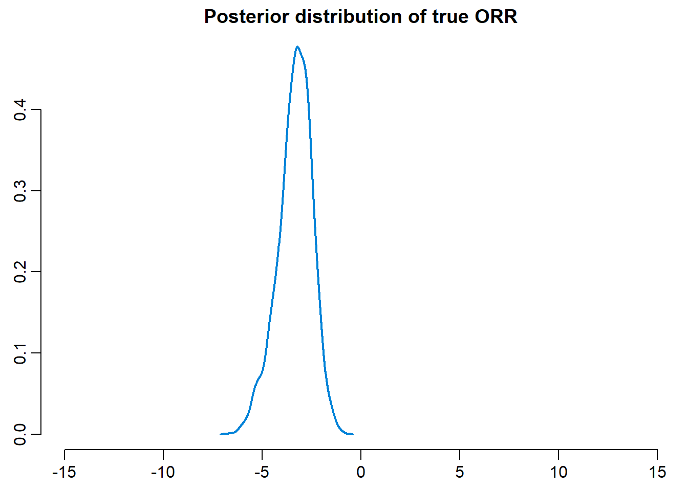
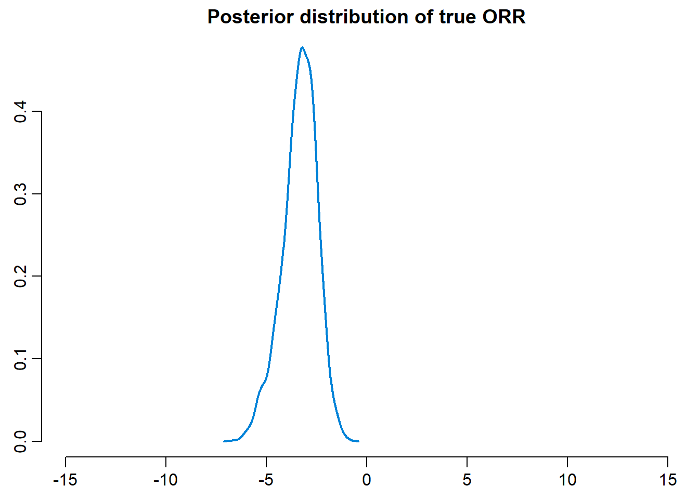
## [1] "PessimisticPrior and Observed ORR = 0.1"
## Compiling model graph
## Resolving undeclared variables
## Allocating nodes
## Graph information:
## Observed stochastic nodes: 2
## Unobserved stochastic nodes: 12
## Total graph size: 70
##
## Initializing model
##
##
## Iterations = 1:4996
## Thinning interval = 5
## Number of chains = 3
## Sample size per chain = 1000
##
## 1. Empirical mean and standard deviation for each variable,
## plus standard error of the mean:
##
## Mean SD Naive SE Time-series SE
## deviance 6.18686 1.62770 0.0297176 0.090337
## logit_p[1] -3.32898 0.74388 0.0135813 0.052031
## logit_p[2] -2.98604 0.72397 0.0132179 0.041677
## p[1] 0.04261 0.02666 0.0004868 0.001597
## p[2] 0.05852 0.03774 0.0006890 0.001890
## p.failure[1] 0.99700 0.05470 0.0009987 0.001308
## p.failure[2] 0.96733 0.17779 0.0032460 0.006313
## p.success[1] 0.00300 0.05470 0.0009987 0.001308
## p.success[2] 0.03267 0.17779 0.0032460 0.006313
##
## 2. Quantiles for each variable:
##
## 2.5% 25% 50% 75% 97.5%
## deviance 4.555984 5.15490 5.70730 6.71055 10.3996
## logit_p[1] -5.053143 -3.74295 -3.24753 -2.81646 -2.1038
## logit_p[2] -4.501058 -3.41278 -2.94439 -2.50831 -1.6618
## p[1] 0.006349 0.02314 0.03742 0.05644 0.1087
## p[2] 0.010975 0.03190 0.05000 0.07528 0.1595
## p.failure[1] 1.000000 1.00000 1.00000 1.00000 1.0000
## p.failure[2] 0.000000 1.00000 1.00000 1.00000 1.0000
## p.success[1] 0.000000 0.00000 0.00000 0.00000 0.0000
## p.success[2] 0.000000 0.00000 0.00000 0.00000 1.0000 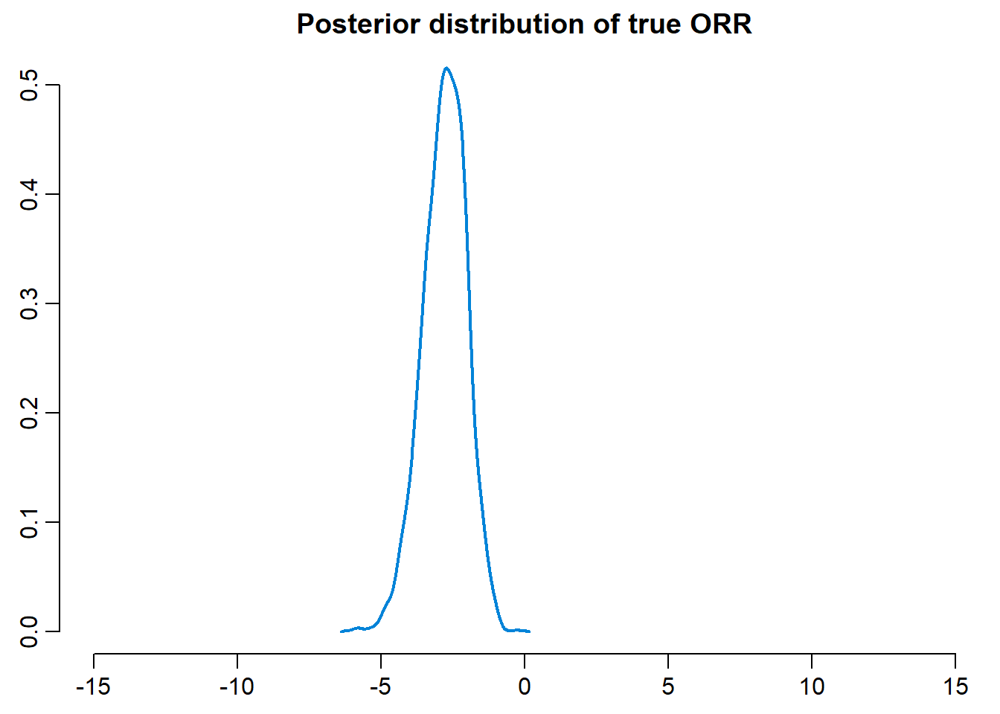
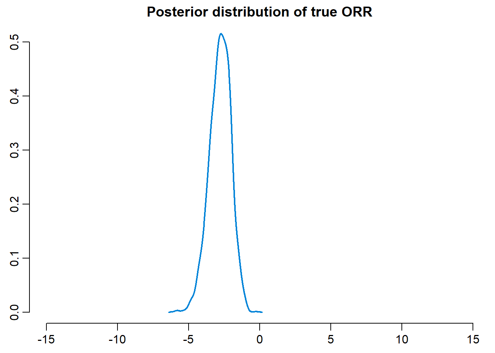
## [1] "PessimisticPrior and Observed ORR = 0.15"
## Compiling model graph
## Resolving undeclared variables
## Allocating nodes
## Graph information:
## Observed stochastic nodes: 2
## Unobserved stochastic nodes: 12
## Total graph size: 70
##
## Initializing model
##
##
## Iterations = 1:4996
## Thinning interval = 5
## Number of chains = 3
## Sample size per chain = 1000
##
## 1. Empirical mean and standard deviation for each variable,
## plus standard error of the mean:
##
## Mean SD Naive SE Time-series SE
## deviance 7.56786 2.01209 0.0367355 0.085889
## logit_p[1] -3.04971 0.76696 0.0140028 0.050516
## logit_p[2] -2.13408 0.57260 0.0104543 0.023288
## p[1] 0.05602 0.03520 0.0006427 0.001996
## p[2] 0.11766 0.05743 0.0010485 0.002261
## p.failure[1] 0.98267 0.13053 0.0023832 0.003428
## p.failure[2] 0.74533 0.43575 0.0079556 0.013615
## p.success[1] 0.01733 0.13053 0.0023832 0.003428
## p.success[2] 0.25467 0.43575 0.0079556 0.013615
##
## 2. Quantiles for each variable:
##
## 2.5% 25% 50% 75% 97.5%
## deviance 5.14243 5.95806 7.17979 8.65099 12.5585
## logit_p[1] -4.81145 -3.50225 -2.94612 -2.50321 -1.8144
## logit_p[2] -3.28454 -2.52095 -2.11888 -1.72786 -1.0511
## p[1] 0.00807 0.02925 0.04992 0.07563 0.1401
## p[2] 0.03611 0.07440 0.10728 0.15086 0.2590
## p.failure[1] 1.00000 1.00000 1.00000 1.00000 1.0000
## p.failure[2] 0.00000 0.00000 1.00000 1.00000 1.0000
## p.success[1] 0.00000 0.00000 0.00000 0.00000 0.0000
## p.success[2] 0.00000 0.00000 0.00000 1.00000 1.0000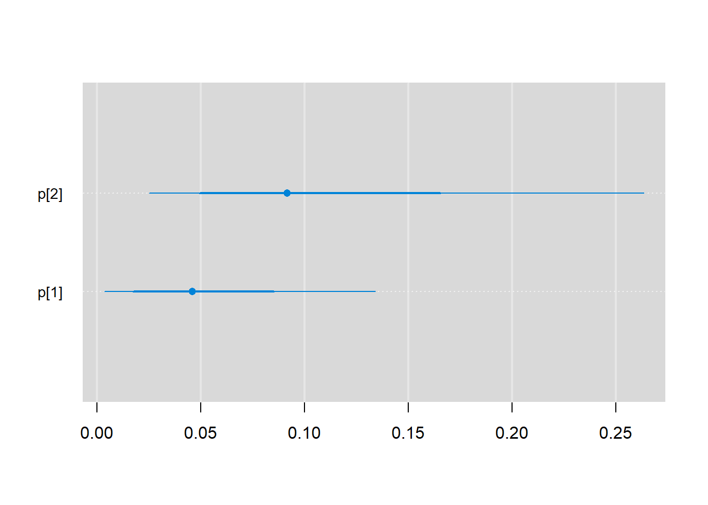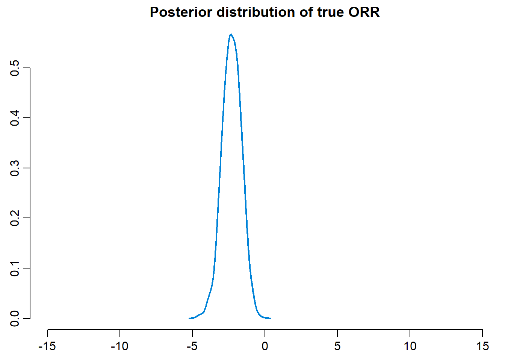
## [1] "PessimisticPrior and Observed ORR = 0.2"
## Compiling model graph
## Resolving undeclared variables
## Allocating nodes
## Graph information:
## Observed stochastic nodes: 2
## Unobserved stochastic nodes: 12
## Total graph size: 70
##
## Initializing model
##
##
## Iterations = 1:4996
## Thinning interval = 5
## Number of chains = 3
## Sample size per chain = 1000
##
## 1. Empirical mean and standard deviation for each variable,
## plus standard error of the mean:
##
## Mean SD Naive SE Time-series SE
## deviance 7.94639 2.24033 0.0409027 0.079345
## logit_p[1] -3.10794 0.88261 0.0161142 0.068971
## logit_p[2] -1.80131 0.54576 0.0099642 0.022674
## p[1] 0.05619 0.03888 0.0007098 0.002108
## p[2] 0.15410 0.06815 0.0012442 0.002701
## p.failure[1] 0.97467 0.15716 0.0028694 0.003983
## p.failure[2] 0.52467 0.49947 0.0091191 0.017475
## p.success[1] 0.02533 0.15716 0.0028694 0.003983
## p.success[2] 0.47533 0.49947 0.0091191 0.017475
##
## 2. Quantiles for each variable:
##
## 2.5% 25% 50% 75% 97.5%
## deviance 5.303766 6.11805 7.41032 9.26222 13.3767
## logit_p[1] -5.178764 -3.59424 -2.98337 -2.48142 -1.7345
## logit_p[2] -2.918070 -2.17036 -1.77188 -1.42587 -0.7777
## p[1] 0.005603 0.02675 0.04818 0.07717 0.1500
## p[2] 0.051267 0.10244 0.14531 0.19374 0.3148
## p.failure[1] 0.000000 1.00000 1.00000 1.00000 1.0000
## p.failure[2] 0.000000 0.00000 1.00000 1.00000 1.0000
## p.success[1] 0.000000 0.00000 0.00000 0.00000 1.0000
## p.success[2] 0.000000 0.00000 0.00000 1.00000 1.0000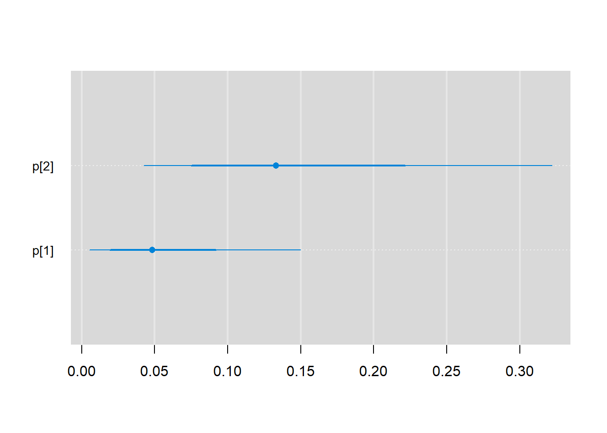
## [1] "PessimisticPrior and Observed ORR = 0.25"
## Compiling model graph
## Resolving undeclared variables
## Allocating nodes
## Graph information:
## Observed stochastic nodes: 2
## Unobserved stochastic nodes: 12
## Total graph size: 70
##
## Initializing model
##
##
## Iterations = 1:4996
## Thinning interval = 5
## Number of chains = 3
## Sample size per chain = 1000
##
## 1. Empirical mean and standard deviation for each variable,
## plus standard error of the mean:
##
## Mean SD Naive SE Time-series SE
## deviance 8.03504 2.38354 0.0435172 0.093733
## logit_p[1] -3.11877 0.86432 0.0157803 0.062701
## logit_p[2] -1.49237 0.53511 0.0097698 0.020216
## p[1] 0.05512 0.03756 0.0006857 0.002265
## p[2] 0.19642 0.08057 0.0014711 0.002995
## p.failure[1] 0.97900 0.14341 0.0026183 0.004102
## p.failure[2] 0.32533 0.46858 0.0085550 0.015110
## p.success[1] 0.02100 0.14341 0.0026183 0.004102
## p.success[2] 0.67467 0.46858 0.0085550 0.015110
##
## 2. Quantiles for each variable:
##
## 2.5% 25% 50% 75% 97.5%
## deviance 5.44424 6.15102 7.35989 9.30940 13.8563
## logit_p[1] -5.04354 -3.62984 -3.00129 -2.48769 -1.7768
## logit_p[2] -2.54856 -1.86642 -1.46783 -1.09736 -0.5105
## p[1] 0.00641 0.02584 0.04737 0.07673 0.1447
## p[2] 0.07252 0.13396 0.18727 0.25024 0.3751
## p.failure[1] 1.00000 1.00000 1.00000 1.00000 1.0000
## p.failure[2] 0.00000 0.00000 0.00000 1.00000 1.0000
## p.success[1] 0.00000 0.00000 0.00000 0.00000 0.0000
## p.success[2] 0.00000 0.00000 1.00000 1.00000 1.0000

## [1] "PessimisticPrior and Observed ORR = 0.3"
## Compiling model graph
## Resolving undeclared variables
## Allocating nodes
## Graph information:
## Observed stochastic nodes: 2
## Unobserved stochastic nodes: 12
## Total graph size: 70
##
## Initializing model
##
##
## Iterations = 1:4996
## Thinning interval = 5
## Number of chains = 3
## Sample size per chain = 1000
##
## 1. Empirical mean and standard deviation for each variable,
## plus standard error of the mean:
##
## Mean SD Naive SE Time-series SE
## deviance 8.04575 2.47849 0.0452509 0.091992
## logit_p[1] -3.18013 0.93747 0.0171158 0.072325
## logit_p[2] -1.01734 0.45801 0.0083621 0.015115
## p[1] 0.05382 0.03871 0.0007068 0.002398
## p[2] 0.27463 0.08657 0.0015805 0.002865
## p.failure[1] 0.97233 0.16404 0.0029950 0.005455
## p.failure[2] 0.06467 0.24598 0.0044909 0.005934
## p.success[1] 0.02767 0.16404 0.0029950 0.005455
## p.success[2] 0.93533 0.24598 0.0044909 0.005934
##
## 2. Quantiles for each variable:
##
## 2.5% 25% 50% 75% 97.5%
## deviance 5.601038 6.26045 7.26606 9.03326 14.8067
## logit_p[1] -5.328739 -3.69391 -3.02126 -2.52882 -1.7114
## logit_p[2] -1.953314 -1.31469 -0.99709 -0.69223 -0.1938
## p[1] 0.004827 0.02427 0.04647 0.07386 0.1530
## p[2] 0.124192 0.21170 0.26951 0.33354 0.4517
## p.failure[1] 0.000000 1.00000 1.00000 1.00000 1.0000
## p.failure[2] 0.000000 0.00000 0.00000 0.00000 1.0000
## p.success[1] 0.000000 0.00000 0.00000 0.00000 1.0000
## p.success[2] 0.000000 1.00000 1.00000 1.00000 1.0000

## [1] "PessimisticPrior and Observed ORR = 0.35"
## Compiling model graph
## Resolving undeclared variables
## Allocating nodes
## Graph information:
## Observed stochastic nodes: 2
## Unobserved stochastic nodes: 12
## Total graph size: 70
##
## Initializing model
##
##
## Iterations = 1:4996
## Thinning interval = 5
## Number of chains = 3
## Sample size per chain = 1000
##
## 1. Empirical mean and standard deviation for each variable,
## plus standard error of the mean:
##
## Mean SD Naive SE Time-series SE
## deviance 8.09193 2.44373 0.0446162 0.094739
## logit_p[1] -3.13402 0.91332 0.0166749 0.070846
## logit_p[2] -0.80581 0.43868 0.0080092 0.013286
## p[1] 0.05575 0.03966 0.0007241 0.002396
## p[2] 0.31622 0.09059 0.0016539 0.002683
## p.failure[1] 0.96900 0.17335 0.0031649 0.005670
## p.failure[2] 0.02233 0.14779 0.0026983 0.003691
## p.success[1] 0.03100 0.17335 0.0031649 0.005670
## p.success[2] 0.97767 0.14779 0.0026983 0.003691
##
## 2. Quantiles for each variable:
##
## 2.5% 25% 50% 75% 97.5%
## deviance 5.637724 6.32052 7.35530 9.10653 14.90641
## logit_p[1] -5.300515 -3.62683 -2.99100 -2.49877 -1.69484
## logit_p[2] -1.702566 -1.09025 -0.78458 -0.51648 0.01957
## p[1] 0.004964 0.02591 0.04783 0.07594 0.15514
## p[2] 0.154130 0.25157 0.31333 0.37367 0.50489
## p.failure[1] 0.000000 1.00000 1.00000 1.00000 1.00000
## p.failure[2] 0.000000 0.00000 0.00000 0.00000 0.00000
## p.success[1] 0.000000 0.00000 0.00000 0.00000 1.00000
## p.success[2] 1.000000 1.00000 1.00000 1.00000 1.00000

## [1] "OptimisticPrior and Observed ORR = 0.05"
## Compiling model graph
## Resolving undeclared variables
## Allocating nodes
## Graph information:
## Observed stochastic nodes: 2
## Unobserved stochastic nodes: 12
## Total graph size: 70
##
## Initializing model
##
##
## Iterations = 1:4996
## Thinning interval = 5
## Number of chains = 3
## Sample size per chain = 1000
##
## 1. Empirical mean and standard deviation for each variable,
## plus standard error of the mean:
##
## Mean SD Naive SE Time-series SE
## deviance 5.124661 1.43959 0.0262831 0.062675
## logit_p[1] -3.202830 0.69153 0.0126256 0.041960
## logit_p[2] -3.103679 0.69085 0.0126131 0.036827
## p[1] 0.047097 0.02893 0.0005283 0.001501
## p[2] 0.051799 0.03233 0.0005903 0.001689
## p.failure[1] 0.994333 0.07508 0.0013707 0.001774
## p.failure[2] 0.984667 0.12290 0.0022438 0.004364
## p.success[1] 0.005667 0.07508 0.0013707 0.001774
## p.success[2] 0.015333 0.12290 0.0022438 0.004364
##
## 2. Quantiles for each variable:
##
## 2.5% 25% 50% 75% 97.5%
## deviance 3.949590 4.17135 4.61924 5.55881 9.1998
## logit_p[1] -4.714611 -3.62275 -3.14208 -2.72657 -1.9934
## logit_p[2] -4.578190 -3.54049 -3.07766 -2.60490 -1.8764
## p[1] 0.008884 0.02601 0.04140 0.06142 0.1199
## p[2] 0.010169 0.02818 0.04404 0.06882 0.1328
## p.failure[1] 1.000000 1.00000 1.00000 1.00000 1.0000
## p.failure[2] 1.000000 1.00000 1.00000 1.00000 1.0000
## p.success[1] 0.000000 0.00000 0.00000 0.00000 0.0000
## p.success[2] 0.000000 0.00000 0.00000 0.00000 0.0000 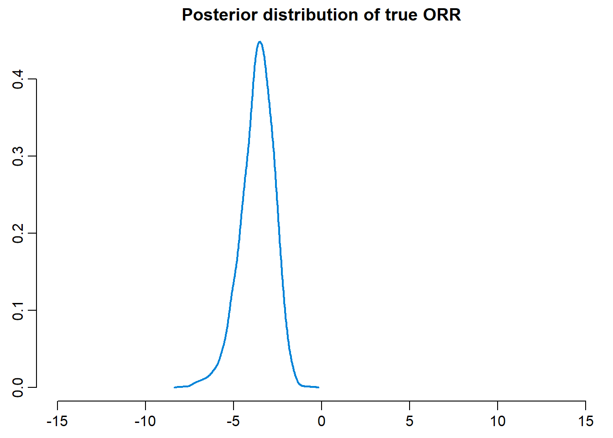
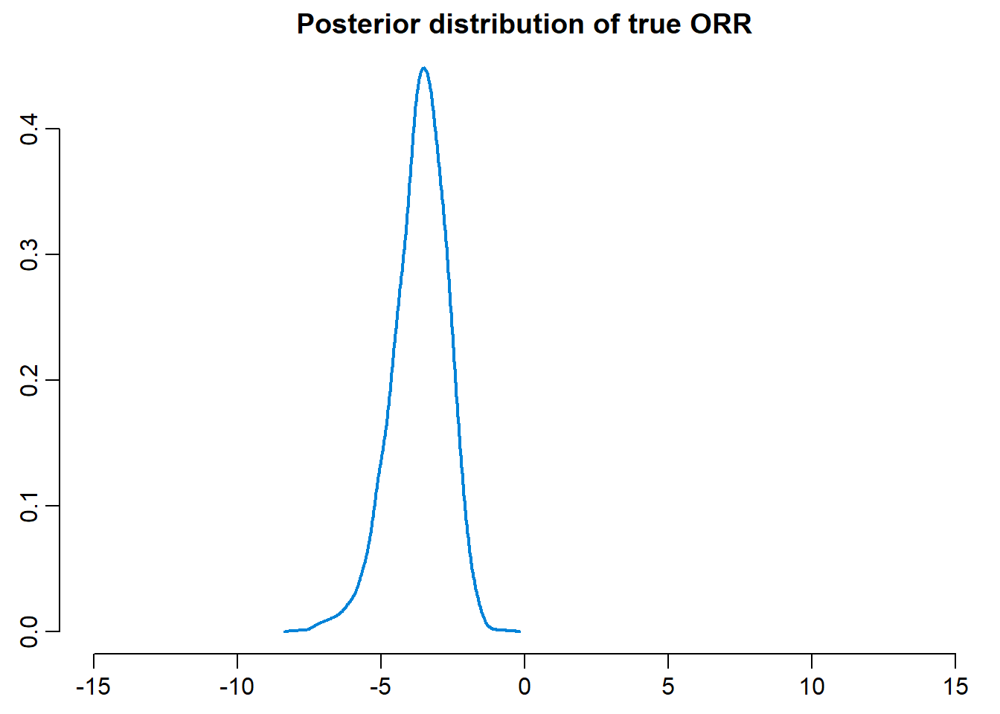
## [1] "OptimisticPrior and Observed ORR = 0.1"
## Compiling model graph
## Resolving undeclared variables
## Allocating nodes
## Graph information:
## Observed stochastic nodes: 2
## Unobserved stochastic nodes: 12
## Total graph size: 70
##
## Initializing model
##
##
## Iterations = 1:4996
## Thinning interval = 5
## Number of chains = 3
## Sample size per chain = 1000
##
## 1. Empirical mean and standard deviation for each variable,
## plus standard error of the mean:
##
## Mean SD Naive SE Time-series SE
## deviance 6.049062 1.42707 0.0260546 0.051251
## logit_p[1] -3.049307 0.63898 0.0116662 0.034362
## logit_p[2] -2.694863 0.64853 0.0118404 0.031444
## p[1] 0.053031 0.02960 0.0005404 0.001441
## p[2] 0.073867 0.04252 0.0007763 0.001799
## p.failure[1] 0.994333 0.07508 0.0013707 0.001893
## p.failure[2] 0.944667 0.22867 0.0041749 0.006095
## p.success[1] 0.005667 0.07508 0.0013707 0.001893
## p.success[2] 0.055333 0.22867 0.0041749 0.006095
##
## 2. Quantiles for each variable:
##
## 2.5% 25% 50% 75% 97.5%
## deviance 4.55991 5.09103 5.62692 6.57210 9.8264
## logit_p[1] -4.43861 -3.46651 -2.98684 -2.58237 -1.9672
## logit_p[2] -4.08695 -3.10066 -2.65372 -2.25424 -1.5270
## p[1] 0.01167 0.03028 0.04802 0.07028 0.1227
## p[2] 0.01651 0.04308 0.06576 0.09498 0.1784
## p.failure[1] 1.00000 1.00000 1.00000 1.00000 1.0000
## p.failure[2] 0.00000 1.00000 1.00000 1.00000 1.0000
## p.success[1] 0.00000 0.00000 0.00000 0.00000 0.0000
## p.success[2] 0.00000 0.00000 0.00000 0.00000 1.0000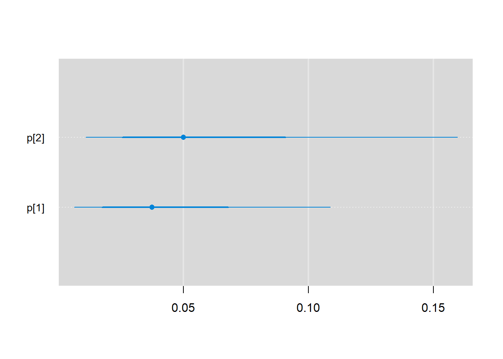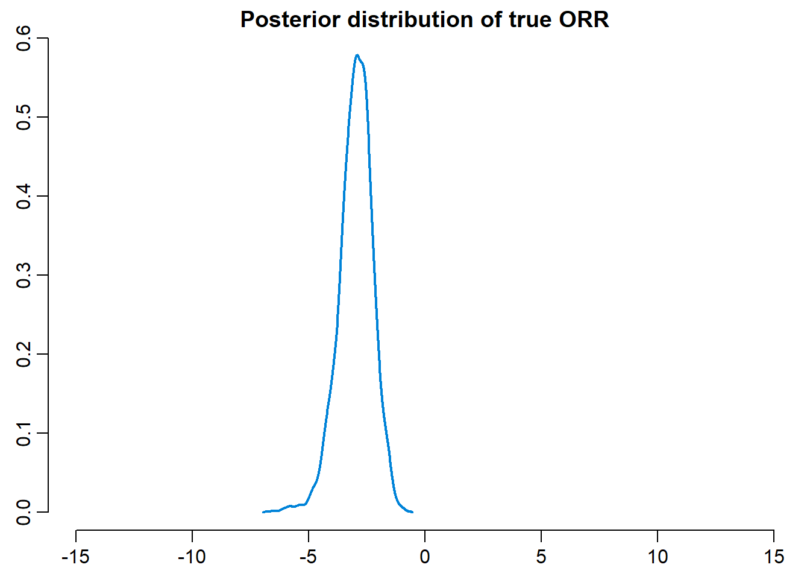
## [1] "OptimisticPrior and Observed ORR = 0.15"
## Compiling model graph
## Resolving undeclared variables
## Allocating nodes
## Graph information:
## Observed stochastic nodes: 2
## Unobserved stochastic nodes: 12
## Total graph size: 70
##
## Initializing model
##
##
## Iterations = 1:4996
## Thinning interval = 5
## Number of chains = 3
## Sample size per chain = 1000
##
## 1. Empirical mean and standard deviation for each variable,
## plus standard error of the mean:
##
## Mean SD Naive SE Time-series SE
## deviance 7.54878 1.98266 0.0361982 0.071045
## logit_p[1] -2.88303 0.76838 0.0140286 0.050526
## logit_p[2] -1.98398 0.53881 0.0098374 0.021191
## p[1] 0.06506 0.03911 0.0007141 0.002172
## p[2] 0.13223 0.06041 0.0011030 0.002286
## p.failure[1] 0.96833 0.17514 0.0031976 0.005005
## p.failure[2] 0.67100 0.46993 0.0085797 0.015180
## p.success[1] 0.03167 0.17514 0.0031976 0.005005
## p.success[2] 0.32900 0.46993 0.0085797 0.015180
##
## 2. Quantiles for each variable:
##
## 2.5% 25% 50% 75% 97.5%
## deviance 5.14690 5.96910 7.1579 8.62571 12.2273
## logit_p[1] -4.64690 -3.32530 -2.7463 -2.33589 -1.6954
## logit_p[2] -3.06186 -2.34337 -1.9728 -1.61791 -0.9335
## p[1] 0.00950 0.03471 0.0603 0.08819 0.1551
## p[2] 0.04471 0.08759 0.1221 0.16549 0.2822
## p.failure[1] 0.00000 1.00000 1.0000 1.00000 1.0000
## p.failure[2] 0.00000 0.00000 1.0000 1.00000 1.0000
## p.success[1] 0.00000 0.00000 0.0000 0.00000 1.0000
## p.success[2] 0.00000 0.00000 0.0000 1.00000 1.0000

## [1] "OptimisticPrior and Observed ORR = 0.2"
## Compiling model graph
## Resolving undeclared variables
## Allocating nodes
## Graph information:
## Observed stochastic nodes: 2
## Unobserved stochastic nodes: 12
## Total graph size: 70
##
## Initializing model
##
##
## Iterations = 1:4996
## Thinning interval = 5
## Number of chains = 3
## Sample size per chain = 1000
##
## 1. Empirical mean and standard deviation for each variable,
## plus standard error of the mean:
##
## Mean SD Naive SE Time-series SE
## deviance 7.94221 2.19675 0.0401071 0.091622
## logit_p[1] -2.87873 0.80390 0.0146772 0.063970
## logit_p[2] -1.68219 0.52255 0.0095404 0.019440
## p[1] 0.06656 0.04149 0.0007575 0.002862
## p[2] 0.16864 0.07051 0.0012873 0.002539
## p.failure[1] 0.95633 0.20439 0.0037316 0.006174
## p.failure[2] 0.45033 0.49761 0.0090851 0.015293
## p.success[1] 0.04367 0.20439 0.0037316 0.006174
## p.success[2] 0.54967 0.49761 0.0090851 0.015293
##
## 2. Quantiles for each variable:
##
## 2.5% 25% 50% 75% 97.5%
## deviance 5.323010 6.16264 7.36123 9.38661 13.0236
## logit_p[1] -4.733054 -3.37169 -2.74003 -2.29780 -1.6408
## logit_p[2] -2.735684 -2.03124 -1.67713 -1.31614 -0.7253
## p[1] 0.008723 0.03319 0.06065 0.09131 0.1624
## p[2] 0.060900 0.11596 0.15748 0.21146 0.3262
## p.failure[1] 0.000000 1.00000 1.00000 1.00000 1.0000
## p.failure[2] 0.000000 0.00000 0.00000 1.00000 1.0000
## p.success[1] 0.000000 0.00000 0.00000 0.00000 1.0000
## p.success[2] 0.000000 0.00000 1.00000 1.00000 1.0000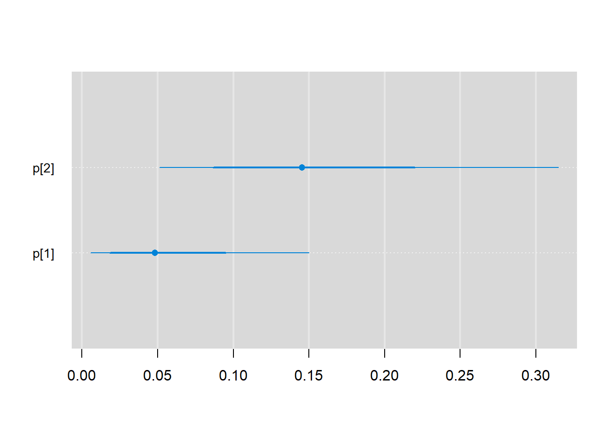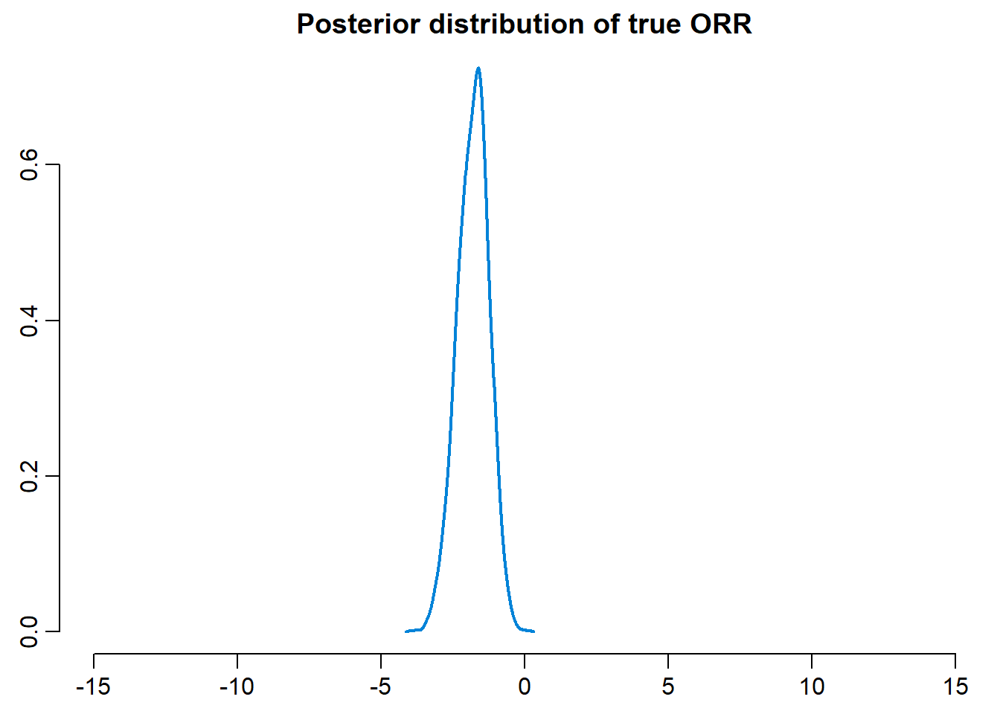
## [1] "OptimisticPrior and Observed ORR = 0.25"
## Compiling model graph
## Resolving undeclared variables
## Allocating nodes
## Graph information:
## Observed stochastic nodes: 2
## Unobserved stochastic nodes: 12
## Total graph size: 70
##
## Initializing model
##
##
## Iterations = 1:4996
## Thinning interval = 5
## Number of chains = 3
## Sample size per chain = 1000
##
## 1. Empirical mean and standard deviation for each variable,
## plus standard error of the mean:
##
## Mean SD Naive SE Time-series SE
## deviance 8.3795 2.60628 0.0475840 0.103424
## logit_p[1] -2.7443 0.73899 0.0134920 0.043472
## logit_p[2] -1.4361 0.50802 0.0092751 0.018341
## p[1] 0.0730 0.04349 0.0007941 0.002346
## p[2] 0.2038 0.07790 0.0014222 0.002681
## p.failure[1] 0.9400 0.23753 0.0043366 0.007463
## p.failure[2] 0.2757 0.44692 0.0081597 0.013297
## p.success[1] 0.0600 0.23753 0.0043366 0.007463
## p.success[2] 0.7243 0.44692 0.0081597 0.013297
##
## 2. Quantiles for each variable:
##
## 2.5% 25% 50% 75% 97.5%
## deviance 5.43103 6.34574 7.64119 9.77504 14.7085
## logit_p[1] -4.50270 -3.17890 -2.65563 -2.22750 -1.5408
## logit_p[2] -2.48657 -1.77879 -1.41382 -1.08363 -0.5094
## p[1] 0.01096 0.03997 0.06564 0.09731 0.1764
## p[2] 0.07680 0.14445 0.19563 0.25282 0.3753
## p.failure[1] 0.00000 1.00000 1.00000 1.00000 1.0000
## p.failure[2] 0.00000 0.00000 0.00000 1.00000 1.0000
## p.success[1] 0.00000 0.00000 0.00000 0.00000 1.0000
## p.success[2] 0.00000 0.00000 1.00000 1.00000 1.0000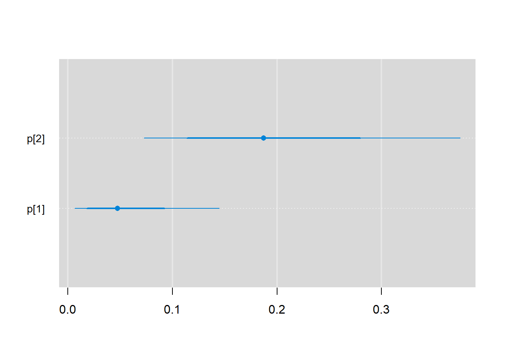
## [1] "OptimisticPrior and Observed ORR = 0.3"
## Compiling model graph
## Resolving undeclared variables
## Allocating nodes
## Graph information:
## Observed stochastic nodes: 2
## Unobserved stochastic nodes: 12
## Total graph size: 70
##
## Initializing model
##
##
## Iterations = 1:4996
## Thinning interval = 5
## Number of chains = 3
## Sample size per chain = 1000
##
## 1. Empirical mean and standard deviation for each variable,
## plus standard error of the mean:
##
## Mean SD Naive SE Time-series SE
## deviance 8.35602 2.68556 0.0490314 0.101393
## logit_p[1] -2.86052 0.75021 0.0136969 0.046251
## logit_p[2] -0.98589 0.48067 0.0087757 0.016037
## p[1] 0.06626 0.04147 0.0007572 0.002197
## p[2] 0.28155 0.09238 0.0016866 0.003030
## p.failure[1] 0.95833 0.19986 0.0036489 0.005902
## p.failure[2] 0.06733 0.25064 0.0045760 0.006558
## p.success[1] 0.04167 0.19986 0.0036489 0.005902
## p.success[2] 0.93267 0.25064 0.0045760 0.006558
##
## 2. Quantiles for each variable:
##
## 2.5% 25% 50% 75% 97.5%
## deviance 5.6016 6.39238 7.54207 9.47043 15.55266
## logit_p[1] -4.5170 -3.32318 -2.78584 -2.31672 -1.59506
## logit_p[2] -1.9719 -1.29981 -0.97438 -0.64919 -0.08317
## p[1] 0.0108 0.03478 0.05809 0.08975 0.16867
## p[2] 0.1222 0.21420 0.27401 0.34317 0.47922
## p.failure[1] 0.0000 1.00000 1.00000 1.00000 1.00000
## p.failure[2] 0.0000 0.00000 0.00000 0.00000 1.00000
## p.success[1] 0.0000 0.00000 0.00000 0.00000 1.00000
## p.success[2] 0.0000 1.00000 1.00000 1.00000 1.00000 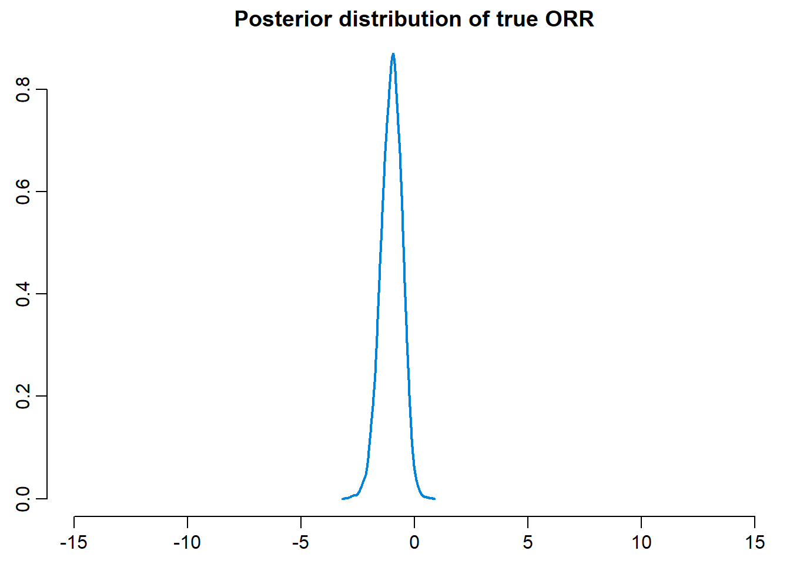
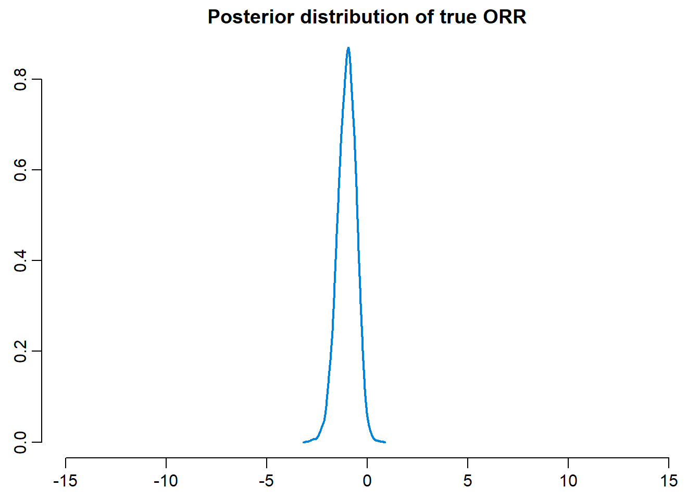
## [1] "OptimisticPrior and Observed ORR = 0.35"
## Compiling model graph
## Resolving undeclared variables
## Allocating nodes
## Graph information:
## Observed stochastic nodes: 2
## Unobserved stochastic nodes: 12
## Total graph size: 70
##
## Initializing model
##
##
## Iterations = 1:4996
## Thinning interval = 5
## Number of chains = 3
## Sample size per chain = 1000
##
## 1. Empirical mean and standard deviation for each variable,
## plus standard error of the mean:
##
## Mean SD Naive SE Time-series SE
## deviance 8.28742 2.61643 0.0477693 0.096246
## logit_p[1] -2.92091 0.82473 0.0150574 0.053939
## logit_p[2] -0.77053 0.44452 0.0081158 0.013724
## p[1] 0.06473 0.04302 0.0007854 0.002236
## p[2] 0.32378 0.09320 0.0017016 0.002845
## p.failure[1] 0.95600 0.20513 0.0037451 0.007407
## p.failure[2] 0.01867 0.13537 0.0024715 0.003301
## p.success[1] 0.04400 0.20513 0.0037451 0.007407
## p.success[2] 0.98133 0.13537 0.0024715 0.003301
##
## 2. Quantiles for each variable:
##
## 2.5% 25% 50% 75% 97.5%
## deviance 5.647320 6.39528 7.48216 9.25411 15.42278
## logit_p[1] -4.930363 -3.37830 -2.82143 -2.33904 -1.57577
## logit_p[2] -1.678302 -1.07710 -0.75590 -0.46473 0.05724
## p[1] 0.007172 0.03298 0.05618 0.08794 0.17140
## p[2] 0.157320 0.25406 0.31954 0.38586 0.51431
## p.failure[1] 0.000000 1.00000 1.00000 1.00000 1.00000
## p.failure[2] 0.000000 0.00000 0.00000 0.00000 0.00000
## p.success[1] 0.000000 0.00000 0.00000 0.00000 1.00000
## p.success[2] 1.000000 1.00000 1.00000 1.00000 1.00000 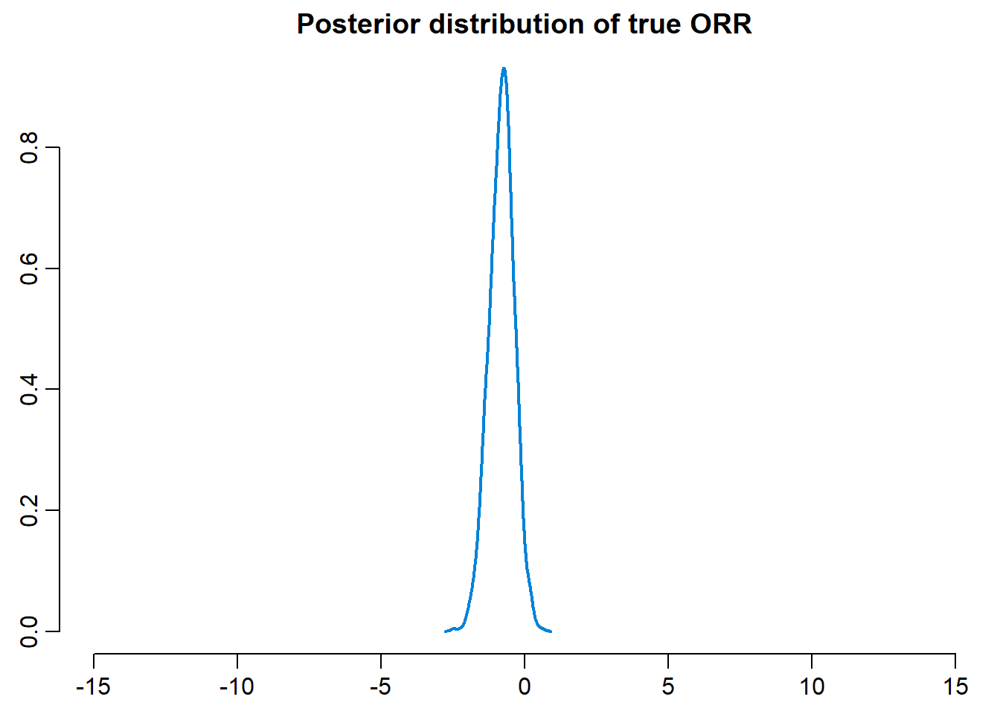
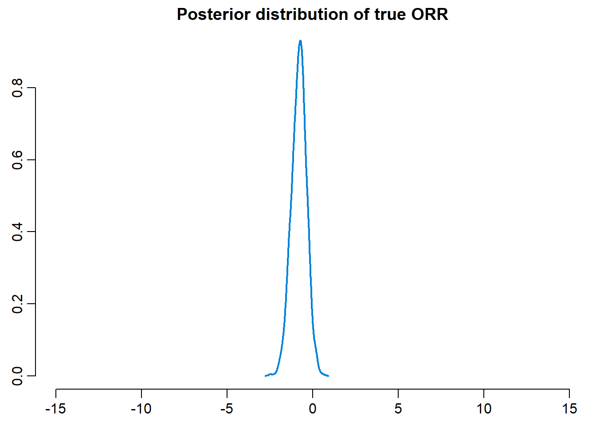
## [1] "NeutralPrior and Observed ORR = 0.05"
## Compiling model graph
## Resolving undeclared variables
## Allocating nodes
## Graph information:
## Observed stochastic nodes: 2
## Unobserved stochastic nodes: 12
## Total graph size: 70
##
## Initializing model
##
##
## Iterations = 1:4996
## Thinning interval = 5
## Number of chains = 3
## Sample size per chain = 1000
##
## 1. Empirical mean and standard deviation for each variable,
## plus standard error of the mean:
##
## Mean SD Naive SE Time-series SE
## deviance 6.249877 2.23875 0.0408738 0.0438014
## logit_p[1] -4.046051 1.29515 0.0236462 0.0236441
## logit_p[2] -3.746139 1.28074 0.0233830 0.0250834
## p[1] 0.029812 0.02865 0.0005230 0.0005231
## p[2] 0.039657 0.03913 0.0007144 0.0007377
## p.failure[1] 0.996667 0.05765 0.0010525 0.0011454
## p.failure[2] 0.975000 0.15615 0.0028509 0.0035370
## p.success[1] 0.003333 0.05765 0.0010525 0.0011454
## p.success[2] 0.025000 0.15615 0.0028509 0.0035370
##
## 2. Quantiles for each variable:
##
## 2.5% 25% 50% 75% 97.5%
## deviance 3.9961935 4.611833 5.60744 7.24090 12.1597
## logit_p[1] -7.0895027 -4.756485 -3.84100 -3.12112 -2.1365
## logit_p[2] -6.7492065 -4.449856 -3.55117 -2.83919 -1.7399
## p[1] 0.0008331 0.008523 0.02102 0.04224 0.1056
## p[2] 0.0011704 0.011545 0.02789 0.05524 0.1493
## p.failure[1] 1.0000000 1.000000 1.00000 1.00000 1.0000
## p.failure[2] 0.9750000 1.000000 1.00000 1.00000 1.0000
## p.success[1] 0.0000000 0.000000 0.00000 0.00000 0.0000
## p.success[2] 0.0000000 0.000000 0.00000 0.00000 0.0250

## [1] "NeutralPrior and Observed ORR = 0.1"
## Compiling model graph
## Resolving undeclared variables
## Allocating nodes
## Graph information:
## Observed stochastic nodes: 2
## Unobserved stochastic nodes: 12
## Total graph size: 70
##
## Initializing model
##
##
## Iterations = 1:4996
## Thinning interval = 5
## Number of chains = 3
## Sample size per chain = 1000
##
## 1. Empirical mean and standard deviation for each variable,
## plus standard error of the mean:
##
## Mean SD Naive SE Time-series SE
## deviance 6.713841 2.22819 0.0406811 0.0435311
## logit_p[1] -4.044502 1.26671 0.0231269 0.0239391
## logit_p[2] -2.700966 0.83537 0.0152517 0.0152463
## p[1] 0.029208 0.02833 0.0005173 0.0004835
## p[2] 0.079557 0.05379 0.0009820 0.0009636
## p.failure[1] 0.994667 0.07285 0.0013300 0.0013304
## p.failure[2] 0.894000 0.30789 0.0056213 0.0055323
## p.success[1] 0.005333 0.07285 0.0013300 0.0013304
## p.success[2] 0.106000 0.30789 0.0056213 0.0055323
##
## 2. Quantiles for each variable:
##
## 2.5% 25% 50% 75% 97.5%
## deviance 4.5561499 5.150351 6.04005 7.5229 12.5623
## logit_p[1] -7.0043826 -4.709222 -3.86025 -3.1729 -2.1207
## logit_p[2] -4.6115386 -3.201847 -2.60644 -2.1281 -1.3037
## p[1] 0.0009071 0.008931 0.02063 0.0402 0.1071
## p[2] 0.0098388 0.039096 0.06872 0.1064 0.2135
## p.failure[1] 1.0000000 1.000000 1.00000 1.0000 1.0000
## p.failure[2] 0.0000000 1.000000 1.00000 1.0000 1.0000
## p.success[1] 0.0000000 0.000000 0.00000 0.0000 0.0000
## p.success[2] 0.0000000 0.000000 0.00000 0.0000 1.0000 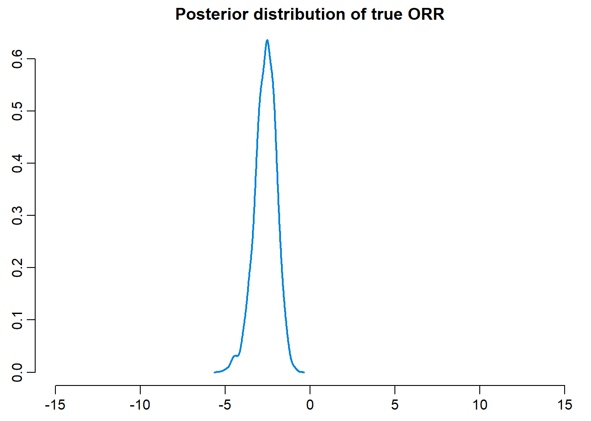
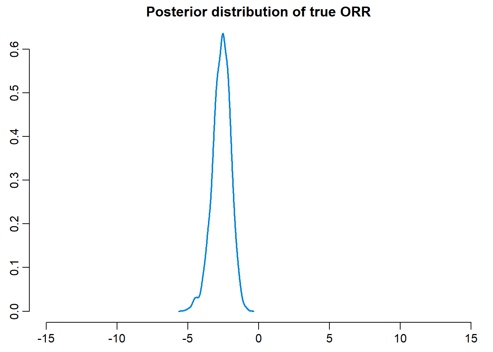
## [1] "NeutralPrior and Observed ORR = 0.15"
## Compiling model graph
## Resolving undeclared variables
## Allocating nodes
## Graph information:
## Observed stochastic nodes: 2
## Unobserved stochastic nodes: 12
## Total graph size: 70
##
## Initializing model
##
##
## Iterations = 1:4996
## Thinning interval = 5
## Number of chains = 3
## Sample size per chain = 1000
##
## 1. Empirical mean and standard deviation for each variable,
## plus standard error of the mean:
##
## Mean SD Naive SE Time-series SE
## deviance 7.264194 2.22012 0.0405337 0.0382133
## logit_p[1] -4.029390 1.30653 0.0238538 0.0239850
## logit_p[2] -1.763981 0.58189 0.0106238 0.0106203
## p[1] 0.030208 0.02865 0.0005232 0.0005231
## p[2] 0.160200 0.07153 0.0013060 0.0013056
## p.failure[1] 0.995667 0.06570 0.0011994 0.0013483
## p.failure[2] 0.483333 0.49981 0.0091252 0.0091264
## p.success[1] 0.004333 0.06570 0.0011994 0.0013483
## p.success[2] 0.516667 0.49981 0.0091252 0.0091264
##
## 2. Quantiles for each variable:
##
## 2.5% 25% 50% 75% 97.5%
## deviance 5.1201529 5.681445 6.57394 8.10836 13.3264
## logit_p[1] -7.2107569 -4.736741 -3.80657 -3.11278 -2.1474
## logit_p[2] -3.0572857 -2.114601 -1.71483 -1.37018 -0.7453
## p[1] 0.0007381 0.008691 0.02174 0.04258 0.1046
## p[2] 0.0449040 0.107686 0.15254 0.20259 0.3218
## p.failure[1] 1.0000000 1.000000 1.00000 1.00000 1.0000
## p.failure[2] 0.0000000 0.000000 0.00000 1.00000 1.0000
## p.success[1] 0.0000000 0.000000 0.00000 0.00000 0.0000
## p.success[2] 0.0000000 0.000000 1.00000 1.00000 1.0000 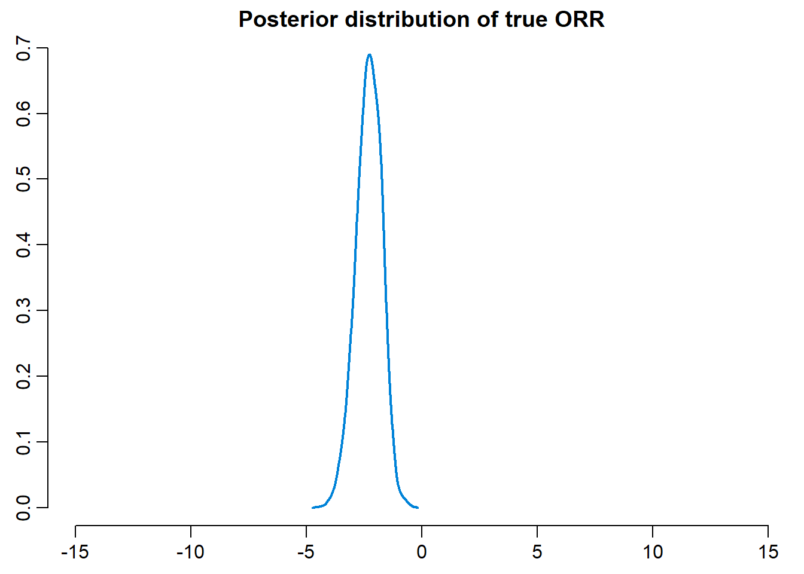
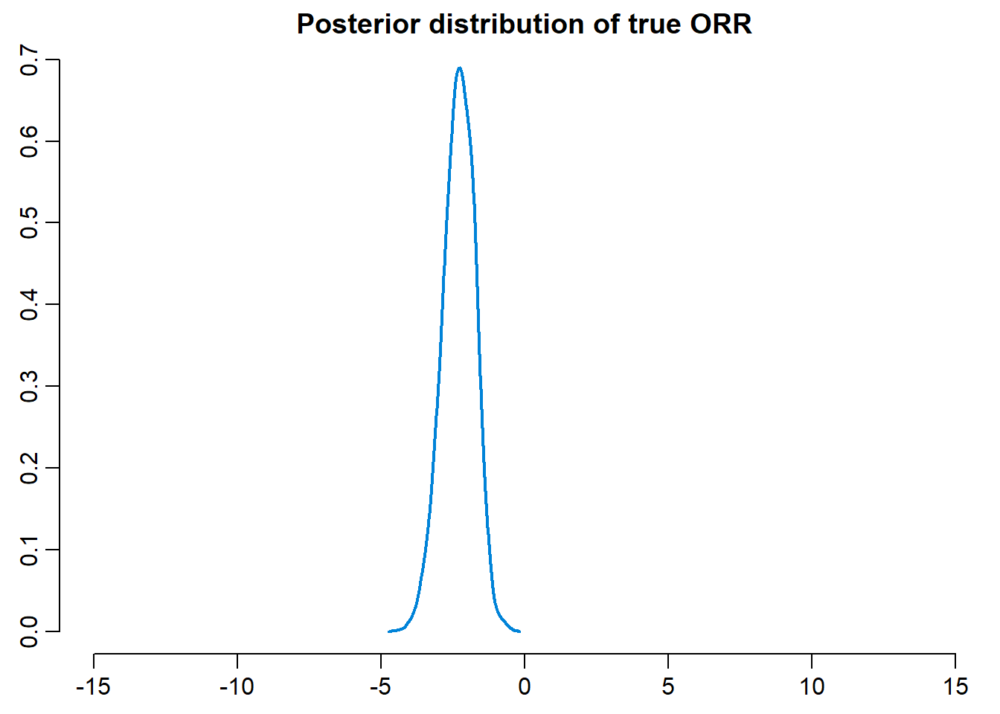
## [1] "NeutralPrior and Observed ORR = 0.2"
## Compiling model graph
## Resolving undeclared variables
## Allocating nodes
## Graph information:
## Observed stochastic nodes: 2
## Unobserved stochastic nodes: 12
## Total graph size: 70
##
## Initializing model
##
##
## Iterations = 1:4996
## Thinning interval = 5
## Number of chains = 3
## Sample size per chain = 1000
##
## 1. Empirical mean and standard deviation for each variable,
## plus standard error of the mean:
##
## Mean SD Naive SE Time-series SE
## deviance 7.37737 2.18697 0.0399284 0.0406921
## logit_p[1] -4.00418 1.27741 0.0233222 0.0226680
## logit_p[2] -1.45539 0.52240 0.0095378 0.0098089
## p[1] 0.03044 0.02899 0.0005294 0.0005443
## p[2] 0.20137 0.07811 0.0014261 0.0014313
## p.failure[1] 0.99500 0.07055 0.0012880 0.0012883
## p.failure[2] 0.27133 0.44472 0.0081195 0.0081217
## p.success[1] 0.00500 0.07055 0.0012880 0.0012883
## p.success[2] 0.72867 0.44472 0.0081195 0.0081217
##
## 2. Quantiles for each variable:
##
## 2.5% 25% 50% 75% 97.5%
## deviance 5.2861838 5.808282 6.71573 8.22499 13.1196
## logit_p[1] -7.0101653 -4.689176 -3.79401 -3.10965 -2.1147
## logit_p[2] -2.5824081 -1.768635 -1.41718 -1.10609 -0.4989
## p[1] 0.0009018 0.009111 0.02201 0.04271 0.1077
## p[2] 0.0702792 0.145712 0.19510 0.24860 0.3778
## p.failure[1] 1.0000000 1.000000 1.00000 1.00000 1.0000
## p.failure[2] 0.0000000 0.000000 0.00000 1.00000 1.0000
## p.success[1] 0.0000000 0.000000 0.00000 0.00000 0.0000
## p.success[2] 0.0000000 0.000000 1.00000 1.00000 1.0000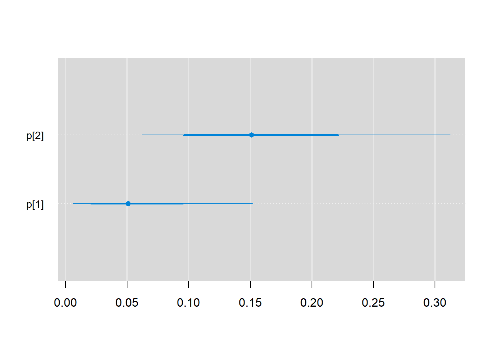
## [1] "NeutralPrior and Observed ORR = 0.25"
## Compiling model graph
## Resolving undeclared variables
## Allocating nodes
## Graph information:
## Observed stochastic nodes: 2
## Unobserved stochastic nodes: 12
## Total graph size: 70
##
## Initializing model
##
##
## Iterations = 1:4996
## Thinning interval = 5
## Number of chains = 3
## Sample size per chain = 1000
##
## 1. Empirical mean and standard deviation for each variable,
## plus standard error of the mean:
##
## Mean SD Naive SE Time-series SE
## deviance 7.52678 2.13542 0.0389872 0.0400414
## logit_p[1] -4.07492 1.30060 0.0237455 0.0247171
## logit_p[2] -1.20645 0.48345 0.0088265 0.0088248
## p[1] 0.02894 0.02765 0.0005047 0.0005064
## p[2] 0.24089 0.08323 0.0015196 0.0015190
## p.failure[1] 0.99800 0.04468 0.0008158 0.0008157
## p.failure[2] 0.13800 0.34496 0.0062980 0.0062946
## p.success[1] 0.00200 0.04468 0.0008158 0.0008157
## p.success[2] 0.86200 0.34496 0.0062980 0.0062946
##
## 2. Quantiles for each variable:
##
## 2.5% 25% 50% 75% 97.5%
## deviance 5.4179466 6.005604 6.8990 8.3440 13.1808
## logit_p[1] -7.2179796 -4.768941 -3.8870 -3.1497 -2.1846
## logit_p[2] -2.2309379 -1.514998 -1.1792 -0.8672 -0.3255
## p[1] 0.0007327 0.008418 0.0201 0.0411 0.1011
## p[2] 0.0970065 0.180199 0.2352 0.2958 0.4193
## p.failure[1] 1.0000000 1.000000 1.0000 1.0000 1.0000
## p.failure[2] 0.0000000 0.000000 0.0000 0.0000 1.0000
## p.success[1] 0.0000000 0.000000 0.0000 0.0000 0.0000
## p.success[2] 0.0000000 1.000000 1.0000 1.0000 1.0000

## [1] "NeutralPrior and Observed ORR = 0.3"
## Compiling model graph
## Resolving undeclared variables
## Allocating nodes
## Graph information:
## Observed stochastic nodes: 2
## Unobserved stochastic nodes: 12
## Total graph size: 70
##
## Initializing model
##
##
## Iterations = 1:4996
## Thinning interval = 5
## Number of chains = 3
## Sample size per chain = 1000
##
## 1. Empirical mean and standard deviation for each variable,
## plus standard error of the mean:
##
## Mean SD Naive SE Time-series SE
## deviance 7.657435 2.08838 0.0381285 0.0399581
## logit_p[1] -4.044972 1.26140 0.0230300 0.0229610
## logit_p[2] -0.788929 0.43528 0.0079472 0.0078092
## p[1] 0.029454 0.02911 0.0005314 0.0005234
## p[2] 0.319683 0.09025 0.0016478 0.0016156
## p.failure[1] 0.994333 0.07508 0.0013707 0.0015372
## p.failure[2] 0.017667 0.13176 0.0024056 0.0026714
## p.success[1] 0.005667 0.07508 0.0013707 0.0015372
## p.success[2] 0.982333 0.13176 0.0024056 0.0026714
##
## 2. Quantiles for each variable:
##
## 2.5% 25% 50% 75% 97.5%
## deviance 5.5689792 6.162373 7.03707 8.51326 13.03952
## logit_p[1] -7.0349551 -4.716701 -3.85735 -3.16276 -2.08658
## logit_p[2] -1.6659648 -1.082595 -0.77084 -0.48345 0.01455
## p[1] 0.0008798 0.008865 0.02069 0.04059 0.11041
## p[2] 0.1589629 0.253015 0.31630 0.38144 0.50364
## p.failure[1] 1.0000000 1.000000 1.00000 1.00000 1.00000
## p.failure[2] 0.0000000 0.000000 0.00000 0.00000 0.00000
## p.success[1] 0.0000000 0.000000 0.00000 0.00000 0.00000
## p.success[2] 1.0000000 1.000000 1.00000 1.00000 1.00000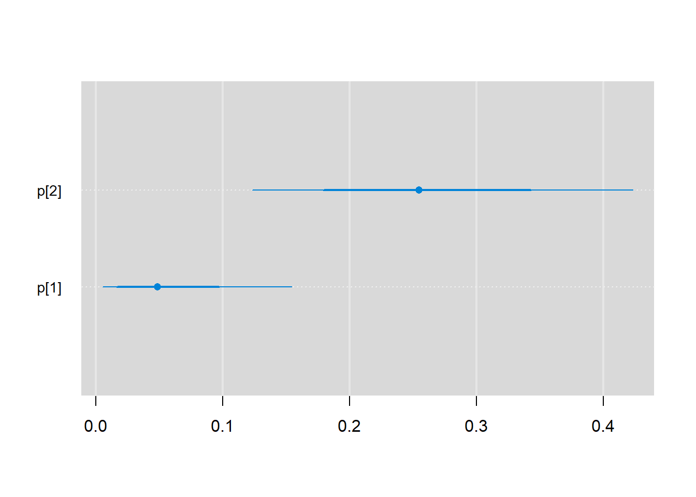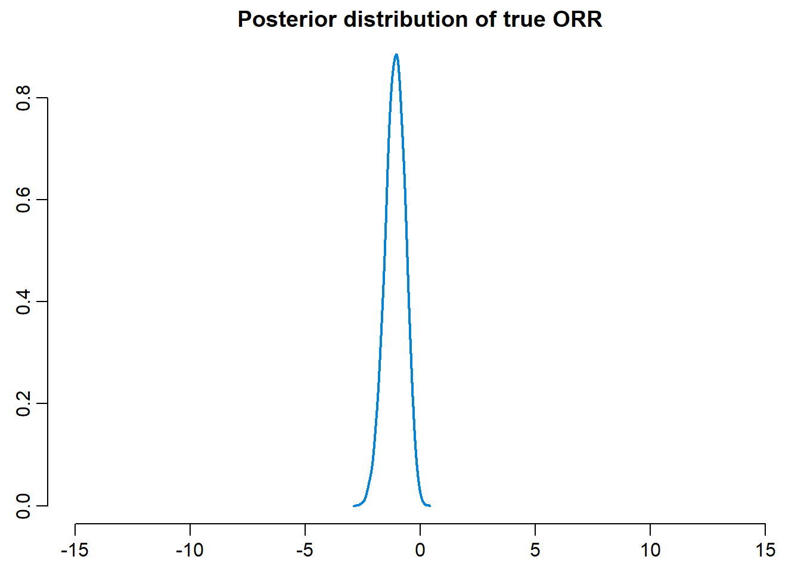
## [1] "NeutralPrior and Observed ORR = 0.35"
## Compiling model graph
## Resolving undeclared variables
## Allocating nodes
## Graph information:
## Observed stochastic nodes: 2
## Unobserved stochastic nodes: 12
## Total graph size: 70
##
## Initializing model
##
##
## Iterations = 1:4996
## Thinning interval = 5
## Number of chains = 3
## Sample size per chain = 1000
##
## 1. Empirical mean and standard deviation for each variable,
## plus standard error of the mean:
##
## Mean SD Naive SE Time-series SE
## deviance 7.731923 2.12140 0.038731 0.0387401
## logit_p[1] -4.079443 1.29436 0.023632 0.0250867
## logit_p[2] -0.602121 0.41933 0.007656 0.0075367
## p[1] 0.028912 0.02799 0.000511 0.0005308
## p[2] 0.359378 0.09285 0.001695 0.0016956
## p.failure[1] 0.996000 0.06313 0.001153 0.0013366
## p.failure[2] 0.004667 0.06816 0.001245 0.0013463
## p.success[1] 0.004000 0.06313 0.001153 0.0013366
## p.success[2] 0.995333 0.06816 0.001245 0.0013463
##
## 2. Quantiles for each variable:
##
## 2.5% 25% 50% 75% 97.5%
## deviance 5.6329270 6.225705 7.09837 8.55427 13.5766
## logit_p[1] -7.1906328 -4.753339 -3.86847 -3.15166 -2.1746
## logit_p[2] -1.4427430 -0.885391 -0.59615 -0.32588 0.1961
## p[1] 0.0007531 0.008549 0.02046 0.04103 0.1021
## p[2] 0.1911209 0.292062 0.35523 0.41924 0.5489
## p.failure[1] 1.0000000 1.000000 1.00000 1.00000 1.0000
## p.failure[2] 0.0000000 0.000000 0.00000 0.00000 0.0000
## p.success[1] 0.0000000 0.000000 0.00000 0.00000 0.0000
## p.success[2] 1.0000000 1.000000 1.00000 1.00000 1.0000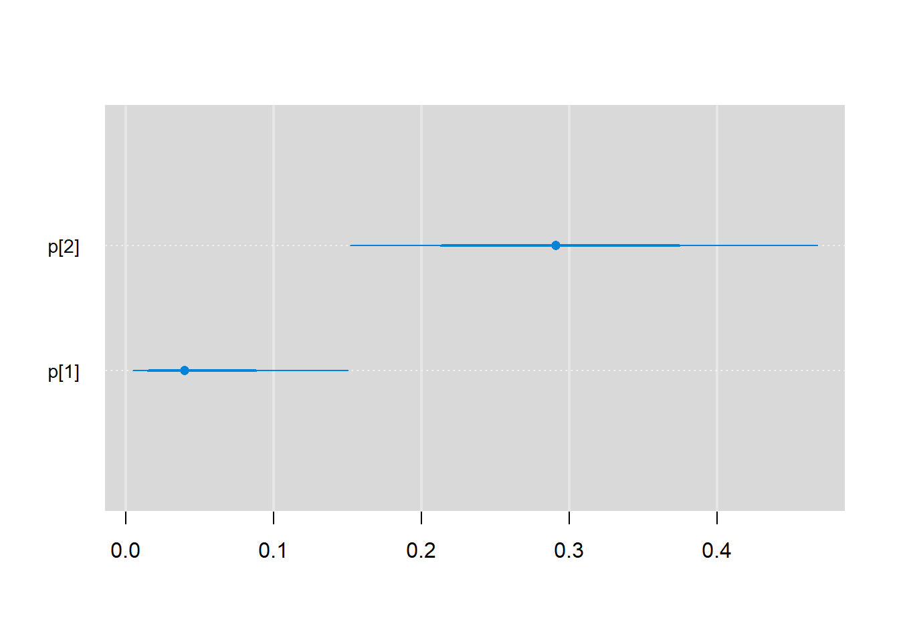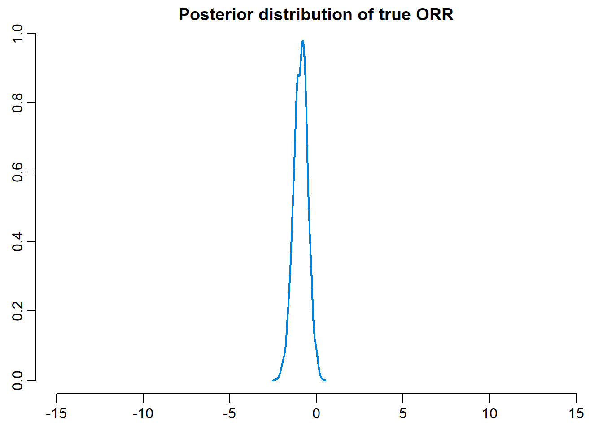
0.2.4 Summary of all outcomes
First plot all priors
## Plot each prior distribution in the EX and NEX parts
prior_logit <- matrix(NA, nrow=Nmix, ncol=nsim)
## Simulate to plot Ex parts and plotting prior separately
for (j in 1:Nexch) {
tau_j <- rhnorm(n = nsim, sigma = 1)
mu_j <- rnorm(n = nsim, mean = mu.mean[j], sd = 1/mu.prec[j])
prior_logit[j,] <- sapply(1:nsim, function(x) {
rnorm(1, mean=mu_j[x], sd=tau_j%>%sqrt)
})
tmp_dens <- prior_logit[j,] %>% density
tmpcol <- col2rgb(colors[j])/255
par(mar=c(5.1, 4.1, 4.1, 2.1)+3)
tmp_dens %>% plot(sub=NA, lwd=2, col=colors[j],
ylim=c(0,.2), xlim=c(-15,15), frame.plot=F,
xlab='log-odd (logit) of ORR',
main=paste(priors[j],
'Prior Distribution of True Log-Odd ORR (logit)'))
tmp_dens %>% polygon(col=rgb(tmpcol[1],tmpcol[2],tmpcol[3],alpha=.5))
segments(x0=mu.mean[j],x1=mu.mean[j],y0=0,y1=tmp_dens$y%>%max, col='black',
lty=2, lwd=2)
axis(1, seq(-15,15,5),
labels=inv.logit(seq(-15,15,5)) %>% round(4), line=5)
mtext("ORR",1,line=7,at=0)
} # end of for (j in 1:Nexch)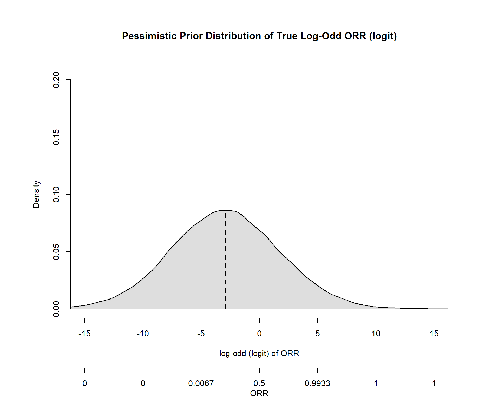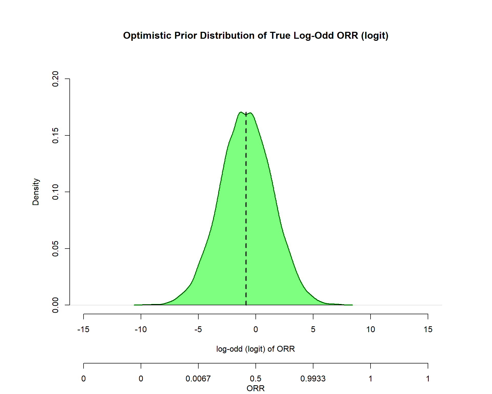
## Now for the NEX part
prior_logit[Nmix,] <- runif(nsim, -20, 20)
tmp_dens <- prior_logit[Nmix,] %>% density
tmpcol <- col2rgb(colors[Nmix])/255
par(mar=c(5.1, 4.1, 4.1, 2.1)+3)
tmp_dens %>% plot(sub=NA, lwd=2, col=colors[Nmix],
ylim=c(0,.2), xlim=c(-15,15), frame.plot=F,
xlab='log-odd (logit)',
main=paste(priors[Nmix],
'Prior Distribution of True Log-Odd ORR (logit)'))
tmp_dens %>% polygon(col=rgb(tmpcol[1],tmpcol[2],tmpcol[3],alpha=.5))
axis(1, seq(-15,15,5),
labels=inv.logit(seq(-15,15,5)) %>% round(4), line=5)
mtext("ORR",1,line=7,at=0)
## Overlay all priors
par(mar=c(5.1, 4.1, 4.1, 2.1)+3)
for (j in 1:Nexch) {
tmp_dens <- prior_logit[j,] %>% density
if (j==1) tmp_dens %>% plot(sub=NA, lwd=2, col=colors[j],
ylim=c(0,.2), xlim=c(-15,15), frame.plot=F,
xlab='log-odd (logit)', main='Prior Distribution of True Log-Odd ORR (logit)')
# if (j>1) tmp_dens %>% lines(lwd=2, col=colors[j])
tmpcol <- col2rgb(colors[j])/255
tmp_dens %>% polygon(col=rgb(tmpcol[1],tmpcol[2],tmpcol[3],alpha=.5))
segments(x0=mu.mean[j],x1=mu.mean[j],y0=0,y1=tmp_dens$y%>%max, col='black',
lty=2, lwd=2)
} # end of for (j in 1:Nexch)
## Simulate to plot NEX part
# x <- seq(-15,15, by=.001)
# x %>% dstp(mu=0, tau=2, nu=1) %>% lines(lwd=2, col=colors[Nmix])
tmpcol <- col2rgb(colors[Nmix])/255
prior_logit[Nmix,] %>% density %>% polygon(col=rgb(tmpcol[1],tmpcol[2],tmpcol[3],alpha=.5))
legend(10,.2, legend=priors, fill=colors)
axis(1, seq(-15,15,5),
labels=inv.logit(seq(-15,15,5)) %>% round(4), line=5)
mtext("ORR",1,line=7,at=0)
# tmp2 <- rcauchy(nsim, location = 0, scale = 1)
# tmp2 %>% density %>% lines(lwd=2, col=colors[Nmix])
# tmpcol <- col2rgb(Nmix)/255
# tmp2 %>% density %>% polygon(col=rgb(tmpcol[1],tmpcol[2],tmpcol[3],alpha=.5))out_tab_p.success <- matrix(NA, ncol=obs.orrs %>% length, nrow=Nmix+1)
rownames(out_tab_p.success) <- c(priors, "Mix")
colnames(out_tab_p.success) <- obs.orrs
out_tab_p <- out_tab_logit <- out_tab_p.failure <- out_tab_p.success
for (id1 in 1:(Nmix+1)) {
prior <- priors[id1]
for (id2 in 1:length(obs.orrs)) {
obs.orr <- obs.orrs[id2]
if (id1<= Nmix) {
out_tab_p.success[id1, id2] <-
binary_exnex_jag_fw[[prior]][[id2]]$BUGSoutput$mean$p.success[[Nstrata]]
out_tab_p.failure[id1, id2] <-
binary_exnex_jag_fw[[prior]][[id2]]$BUGSoutput$mean$p.failure[[Nstrata]]
out_tab_logit[id1, id2] <- paste0(binary_exnex_jag_fw[[prior]][[id2]]$BUGSoutput$summary[Nstrata+1,1] %>% round(2), ' (',binary_exnex_jag_fw[[prior]][[id2]]$BUGSoutput$summary[Nstrata+1,3] %>% round(2),', ', binary_exnex_jag_fw[[prior]][[id2]]$BUGSoutput$summary[Nstrata+1,7] %>% round(2),')' )
out_tab_p[id1, id2] <- paste0(binary_exnex_jag_fw[[prior]][[id2]]$BUGSoutput$summary[Nstrata*2+1,1] %>% round(2), ' (',binary_exnex_jag_fw[[prior]][[id2]]$BUGSoutput$summary[Nstrata*2+1,3] %>% round(2),', ', binary_exnex_jag_fw[[prior]][[id2]]$BUGSoutput$summary[Nstrata*2+1,7] %>% round(2),')' )
} else {
out_tab_p.success[id1, id2] <-
binary_exnex_jag_dw[[id2]]$BUGSoutput$mean$p.success[[Nstrata]]
out_tab_p.failure[id1, id2] <-
binary_exnex_jag_dw[[id2]]$BUGSoutput$mean$p.failure[[Nstrata]]
out_tab_logit[id1, id2] <- paste0(binary_exnex_jag_dw[[id2]]$BUGSoutput$summary[Nstrata+1,1] %>% round(2), ' (',binary_exnex_jag_dw[[id2]]$BUGSoutput$summary[Nstrata+1,3] %>% round(2),', ', binary_exnex_jag_dw[[id2]]$BUGSoutput$summary[Nstrata+1,7] %>% round(2),')' )
out_tab_p[id1, id2] <- paste0(binary_exnex_jag_dw[[id2]]$BUGSoutput$summary[Nstrata*2+1,1] %>% round(2), ' (',binary_exnex_jag_dw[[id2]]$BUGSoutput$summary[Nstrata*2+1,3] %>% round(2),', ', binary_exnex_jag_dw[[id2]]$BUGSoutput$summary[Nstrata*2+1,7] %>% round(2),')' )
} # end of if (id1<= Nmix) else ...
} # end of for (id2 in 1:length(obs.orrs))
} # end of for (id1 in 1:(Nmix+1))
out_tab_p.success %>% kable(digits=2, caption = paste('Posterior probability of true ORR $>$', p.cut)) %>% kable_styling(full_width = F, position = 'center')| 0.05 | 0.1 | 0.15 | 0.2 | 0.25 | 0.3 | 0.35 | |
|---|---|---|---|---|---|---|---|
| Pessimistic | 0.01 | 0.03 | 0.25 | 0.48 | 0.67 | 0.94 | 0.98 |
| Optimistic | 0.02 | 0.06 | 0.33 | 0.55 | 0.72 | 0.93 | 0.98 |
| Neutral | 0.03 | 0.11 | 0.52 | 0.73 | 0.86 | 0.98 | 1.00 |
| Mix | 0.02 | 0.09 | 0.45 | 0.67 | 0.83 | 0.98 | 0.99 |
out_tab_p.failure %>% kable(digits=2, caption = paste('Posterior probability of true ORR $<$', p.cut)) %>% kable_styling(full_width = F, position = 'center')| 0.05 | 0.1 | 0.15 | 0.2 | 0.25 | 0.3 | 0.35 | |
|---|---|---|---|---|---|---|---|
| Pessimistic | 0.99 | 0.97 | 0.75 | 0.52 | 0.33 | 0.06 | 0.02 |
| Optimistic | 0.98 | 0.94 | 0.67 | 0.45 | 0.28 | 0.07 | 0.02 |
| Neutral | 0.98 | 0.89 | 0.48 | 0.27 | 0.14 | 0.02 | 0.00 |
| Mix | 0.98 | 0.91 | 0.55 | 0.33 | 0.17 | 0.02 | 0.01 |
out_tab_p %>% kable(digits=2, caption='Posterior mean and 95% credible interval for true ORR') %>% kable_styling(full_width = F, position = 'center')| 0.05 | 0.1 | 0.15 | 0.2 | 0.25 | 0.3 | 0.35 | |
|---|---|---|---|---|---|---|---|
| Pessimistic | 0.04 (0, 0.11) | 0.06 (0.01, 0.16) | 0.12 (0.04, 0.26) | 0.15 (0.05, 0.31) | 0.2 (0.07, 0.38) | 0.27 (0.12, 0.45) | 0.32 (0.15, 0.5) |
| Optimistic | 0.05 (0.01, 0.13) | 0.07 (0.02, 0.18) | 0.13 (0.04, 0.28) | 0.17 (0.06, 0.33) | 0.2 (0.08, 0.38) | 0.28 (0.12, 0.48) | 0.32 (0.16, 0.51) |
| Neutral | 0.04 (0, 0.15) | 0.08 (0.01, 0.21) | 0.16 (0.04, 0.32) | 0.2 (0.07, 0.38) | 0.24 (0.1, 0.42) | 0.32 (0.16, 0.5) | 0.36 (0.19, 0.55) |
| Mix | 0.05 (0, 0.14) | 0.08 (0.01, 0.2) | 0.15 (0.04, 0.31) | 0.19 (0.07, 0.37) | 0.23 (0.09, 0.41) | 0.31 (0.15, 0.5) | 0.35 (0.18, 0.54) |
out_tab_logit %>% kable(digits=2, caption='Posterior mean and 95% credible interval for log-odd (logit) of true ORR') %>% kable_styling(full_width = F, position = 'center')| 0.05 | 0.1 | 0.15 | 0.2 | 0.25 | 0.3 | 0.35 | |
|---|---|---|---|---|---|---|---|
| Pessimistic | -3.66 (-5.73, -2.05) | -2.99 (-4.5, -1.66) | -2.13 (-3.28, -1.05) | -1.8 (-2.92, -0.78) | -1.49 (-2.55, -0.51) | -1.02 (-1.95, -0.19) | -0.81 (-1.7, 0.02) |
| Optimistic | -3.1 (-4.58, -1.88) | -2.69 (-4.09, -1.53) | -1.98 (-3.06, -0.93) | -1.68 (-2.74, -0.73) | -1.44 (-2.49, -0.51) | -0.99 (-1.97, -0.08) | -0.77 (-1.68, 0.06) |
| Neutral | -3.75 (-6.75, -1.74) | -2.7 (-4.61, -1.3) | -1.76 (-3.06, -0.75) | -1.46 (-2.58, -0.5) | -1.21 (-2.23, -0.33) | -0.79 (-1.67, 0.01) | -0.6 (-1.44, 0.2) |
| Mix | -3.36 (-5.58, -1.79) | -2.67 (-4.27, -1.36) | -1.84 (-3.08, -0.78) | -1.53 (-2.64, -0.54) | -1.27 (-2.29, -0.37) | -0.82 (-1.71, 0.01) | -0.65 (-1.53, 0.15) |
# to-do: add summary table for Rhat and n_eff0.3 Association between LOR and LHR
0.3.1 Load data
data.raw <- readxl::read_xlsx(path = 'PRROC.xlsx', range = cell_cols('A:M'))
data.use <- data.raw %>% dplyr::filter(one_class_mod=='Y')
data.use %>% kbl() %>% kable_styling()| study | res_a | n_a | res_b | n_b | hr_pfs_ab | hr_pfs_low | hr_pfs_upp | code_a | code_b | one_class_mod | dynamic_borrow_SAT | des |
|---|---|---|---|---|---|---|---|---|---|---|---|---|
| 1 | 1 | 34 | 4 | 36 | 0.570 | 0.330 | 0.980 | 2 | 1 | Y | Y | Konstantinopoulos PA, Lancet Oncol. 2020 |
| 2 | 14 | 61 | 2 | 33 | 0.550 | 0.350 | 0.900 | 2 | 1 | Y | Y | Lheureux S, Lancet. 2021 |
| 9 | 55 | 248 | 14 | 118 | 0.980 | 0.730 | 1.310 | 2 | 1 | Y | N | ESMO 2019 |
| 11 | 32 | 221 | 28 | 221 | 1.057 | 0.854 | 1.309 | 2 | 1 | Y | N | CORAIL |
| 12 | 49 | 179 | 21 | 182 | 0.420 | 0.320 | 0.530 | 2 | 1 | Y | N | AURELIA |
| 13 | 9 | 119 | 15 | 114 | 1.500 | 1.200 | 1.900 | 2 | 1 | Y | N | NINJA |
ns <- data.use %>% nrow
y <- se <- matrix(NA, ncol=2, nrow=ns)
for (i in 1:ns) {
s1 <- data.use$res_a[i]
n1 <- data.use$n_a[i]
s2 <- data.use$res_b[i]
n2 <- data.use$n_b[i]
hr <- data.use$hr_pfs_ab[i]
low<- data.use$hr_pfs_low[i]
upp<- data.use$hr_pfs_upp[i]
lor_sd <- lor.sd(s1,n1,s2,n2)
lhr_sd <- lhr.sd(hr,low,upp)
y[i,1:2] <- c(lor_sd[1], lhr_sd[1])
se[i,1:2] <- c(lor_sd[2], lhr_sd[2])
} # end of for (i in 1:ns)
## Naive linear plot
symbols(x=y[,1], y=y[,2], circle = (data.use$n_a+data.use$n_b)/pi, inches=1/3,
ann=T, bg='steelblue2', fg=NULL, xlab='LOR', ylab='LHR')
lm(y[,2]~y[,1]) %>% abline(col='red', lwd=2)
0.3.2 WinBUGs model for one treatment class
This is based on formulae (1) and (2) of https://www.ncbi.nlm.nih.gov/pmc/articles/PMC7065251/
### Model definition
bvnma_one_class_model <- function() {
## Data to be specify in the input
#-------------------------------------------------------------------------------
# ns - number of studies
# y - ns x 2 matrix, each row shows the treatment effect in the surrogate endpoint (1st element) and main endpoint (2nd element)
# se - ns x 2 matrix, each row shows the (study-specific) se of the surrogate (1st element) and main endpoint (2nd element)
## Parameter to be monitored
# mu1
## Parameter to be monitored for surrogacy assessment
# lambda0 - intercept, ideally being 0
# lambda1 - slope, ideally >< 0
# big.psi.sq - conditional variance, ideally being 0
#-------------------------------------------------------------------------------
# within study precision matrix
for(i in 1:ns) {
prec_w[i,1:2,1:2] <- inverse(Sigma[i,1:2,1:2])
# covariance matrix for the i-th study
Sigma[i,1,1] <- pow(se[i,1], 2)
Sigma[i,2,2] <- pow(se[i,2], 2)
Sigma[i,1,2] <- se[i,1] * se[i,2] * rho_w#[i]
Sigma[i,2,1] <- se[i,1] * se[i,2] * rho_w
}
# Random effects model
for(i in 1:ns) {
y[i,1:2] ~ dmnorm(mu[i,1:2], prec_w[i,1:2,1:2])
# product normal formulation for the between study part
mu[i,1] <- mu1[i]
mu1[i] ~ dnorm(0, a)
# mu[i,1] <- dnorm(0, a)
mu[i,2] ~ dnorm(tmp[i], inv.big.psi.sq)
tmp[i] <- lambda0 + lambda1 * mu1[i]
# tmp[i] <- lambda0 + lambda1 * mu[i,1]
#rho_w[i] <- dunif(-1, 1)
y_new[i,1:2] ~ dmnorm(mu[i,1:2], prec_w[i,1:2,1:2])
} # end of for(i in 1:ns)
lambda0 ~ dnorm(0, a)
lambda1 ~ dnorm(0, a)
inv.big.psi.sq <- 1/ big.psi.sq # putting 1/big.psi.sq directly into dnorm(,) not work!
big.psi.sq <- abs(tmp2)
tmp2 ~ dnorm(0, b)# dnorm(0, b)I(0,) # the latter form does not work!
rho_w ~ dunif(-1,1) #-.05 #dunif(-1,1) # giving rho_w prior either not work or not converge
a <- 0.001
b <- 2
# # predict Y2 for given Y1
# for(i in 1:nn) { #nn is number of new y1n
# y2n ~ dnorm(mu2n, pre2n)
# m2n <- mu
# }
} # end of bvnma_one_class_model
write.model(bvnma_one_class_model, 'bvnma_one_class_model.bug')
### Parameters to monitor
parameters_one_class_model <- c('mu1', 'lambda0', 'lambda1','big.psi.sq',
'rho_w', 'y_new')
# ns <- 5 # number of studies
### Inits
inits_one_class_model <- function() {
list(
"mu1"= rnorm(ns, 0, 1),
# "mu"= c(rnorm(5, 0, 1), rep(NA, 5)) %>% matrix(nrow=5, byrow = F),
"lambda0"= rnorm(1, 0, 1),
"lambda1"= rnorm(1, 0, 1),
"big.psi.sq"= rnorm(1, 0, 1) %>% abs,
# rho_w=runif(5, -1, 1)
"rho_w"=runif(1, -1, 1)
)
} # end of inits_one_class_model
### Data
# data_one_class_model <- list(
# "ns"=ns,
# "y"=c(1.46, 2.17, 1.1, 2.22, 0.58, 1.29, 1.41, 2.63, 1.36, 3) %>% matrix(nrow=ns, byrow = T),
# "se"= c(.24, .21, .23, .2, .23, .22, .22, .25, .19, .2) %>% matrix(nrow=ns, byrow = T)
# )
data_one_class_model <- list(ns=ns, y=y, se= se)
### Run MCMC
set.seed(36)
bvnma_one_class_bug <- bugs(data = data_one_class_model, inits =
inits_one_class_model, parameters.to.save =
parameters_one_class_model,
model.file = "bvnma_one_class_model.bug",
n.chains=3, n.iter=20e4,
clearWD=T, bugs.directory="C:/Users/nguyea37/Documents/WinBUGS14")
print(bvnma_one_class_bug)## Inference for Bugs model at "bvnma_one_class_model.bug", fit using WinBUGS,
## 3 chains, each with 2e+05 iterations (first 1e+05 discarded), n.thin = 300
## n.sims = 1002 iterations saved
## mean sd 2.5% 25% 50% 75% 97.5% Rhat n.eff
## mu1[1] -0.9 1.2 -3.4 -1.7 -0.8 -0.1 1.3 1 910
## mu1[2] 1.4 0.7 0.0 1.0 1.4 1.9 2.8 1 1000
## mu1[3] 0.7 0.3 0.1 0.5 0.7 0.9 1.3 1 280
## mu1[4] 0.2 0.3 -0.4 0.0 0.2 0.3 0.7 1 690
## mu1[5] 1.1 0.3 0.5 0.9 1.1 1.3 1.6 1 1000
## mu1[6] -0.6 0.4 -1.5 -0.9 -0.6 -0.3 0.3 1 1000
## lambda0 -0.1 0.3 -0.7 -0.3 -0.1 0.1 0.6 1 790
## lambda1 -0.3 0.4 -1.2 -0.5 -0.3 -0.1 0.4 1 1000
## big.psi.sq 0.3 0.3 0.0 0.1 0.3 0.5 1.1 1 270
## rho_w 0.0 0.6 -0.9 -0.5 -0.1 0.5 0.9 1 1000
## y_new[1,1] -0.9 1.6 -4.0 -2.0 -0.9 0.1 2.2 1 320
## y_new[1,2] -0.4 0.7 -1.7 -0.8 -0.3 0.1 0.9 1 300
## y_new[2,1] 1.4 1.1 -0.6 0.7 1.4 2.2 3.5 1 1000
## y_new[2,2] -0.6 0.6 -1.8 -1.0 -0.6 -0.2 0.6 1 470
## y_new[3,1] 0.7 0.4 -0.2 0.4 0.7 1.0 1.6 1 180
## y_new[3,2] -0.1 0.5 -1.1 -0.5 -0.2 0.2 0.9 1 410
## y_new[4,1] 0.2 0.4 -0.6 -0.1 0.2 0.4 1.0 1 1000
## y_new[4,2] 0.0 0.4 -0.8 -0.3 0.0 0.3 0.8 1 1000
## y_new[5,1] 1.1 0.4 0.2 0.8 1.1 1.4 1.8 1 1000
## y_new[5,2] -0.7 0.5 -1.6 -1.0 -0.7 -0.3 0.3 1 490
## y_new[6,1] -0.6 0.6 -1.8 -1.0 -0.6 -0.2 0.6 1 590
## y_new[6,2] 0.3 0.5 -0.6 0.0 0.3 0.6 1.2 1 1000
## deviance 10.2 6.1 -4.1 6.7 10.6 14.0 21.4 1 1000
##
## For each parameter, n.eff is a crude measure of effective sample size,
## and Rhat is the potential scale reduction factor (at convergence, Rhat=1).
##
## DIC info (using the rule, pD = Dbar-Dhat)
## pD = 7.4 and DIC = 17.6
## DIC is an estimate of expected predictive error (lower deviance is better).plot(bvnma_one_class_bug)
# ### Convergence diagnostic plot
# mcmcplots::mcmcplot(bvnma_one_class_bug)
### Credible interval for selected parameters
par(mar=c(5.1, 4.1+3, 4.1, 2.1))
mcmcplots::caterplot(bvnma_one_class_bug, parms = c('lambda0', 'lambda1','big.psi.sq'), labels=c('lambda_0\n Intercept \n ideally being 0', 'lambda_1\n Slope\n ideally < 0',
'psi^2\n Conditional variance\n ideally being 0'), reorder = F, frame.plot=F, style='plain')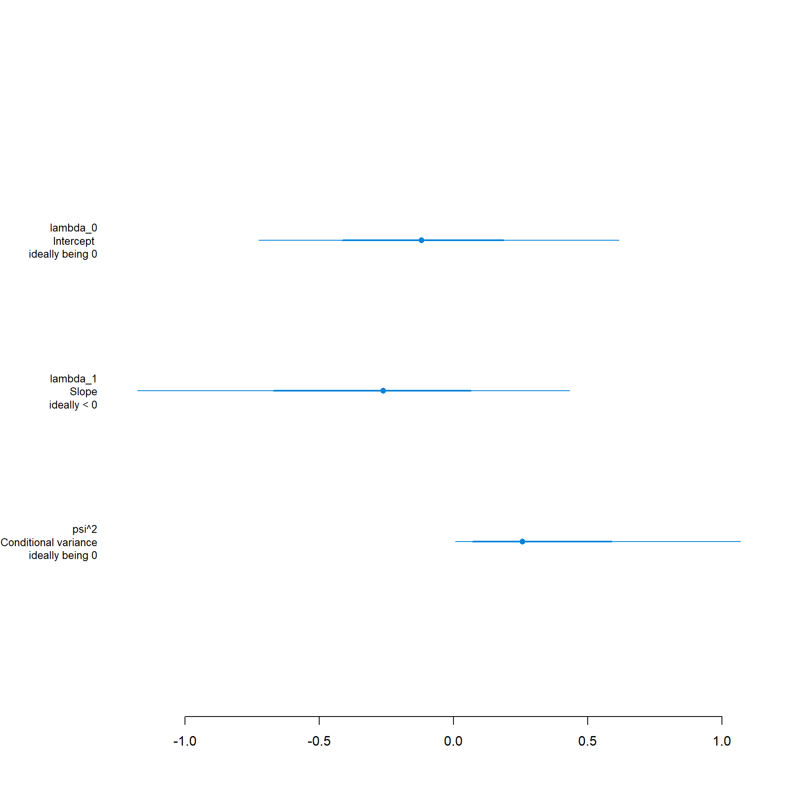
### Density plot for selected parameters
mcmcplots::denplot(bvnma_one_class_bug, parms = c('lambda0', 'lambda1','big.psi.sq'), collapse = T,
main=c('$\\lambda_0$ - Intercept, ideally being 0', '$\\lambda_1$ - Slope, ideally >< 0',
'$\\psi^2$ - conditional variance, ideally being 0'), style = 'plain', frame.plot=F)
# ### Convert Bug obj to MCMC obj so more function can work with
# bvnma_one_class_mcmc <- bvnma_one_class_bug %>% as.mcmc.bugs
#
# bvnma_one_class_mcmc %>% geweke.plot
#
# bvnma_one_class_mcmc %>% gelman.plot
#
# bvnma_one_class_mcmc %>% autocorr.plot
#
# bvnma_one_class_bug %>% autoplot
## Naive linear plot plus simulation from posterior predictive dist
library(randomcoloR)## Warning: package 'randomcoloR' was built under R version 4.2.2cols <- distinctColorPalette(ns)
# symbols(x=y[,1], y=y[,2], circle = (data.use$n_a+data.use$n_b)/pi, inches=1/3,
# ann=T, bg=cols[id], fg=NULL, xlab='LOR', ylab='LHR',
# ylim=c(-3,3), xlim=c(-3,3))
plot(x=y[,1], y=y[,2], cex=(data.use$n_a+data.use$n_b)/(pi*30),
xlab='Log Odds-Ratio', ylab='Log Hazards-Ratio', ylim=c(-3,3), xlim=c(-3,3), pch=19, col=cols,
main='Observed data (big circles withe size ~ N) and simulated data (tiny dots) \n from posterior predictive distribution for each trial (by color)', frame.plot = F)
lor_all <- lhr_all <- NULL
for(id in 1:ns) {
lor <- bvnma_one_class_bug$sims.list$y_new[,id,1]
lhr <- bvnma_one_class_bug$sims.list$y_new[,id,2]
points(x=lor, y=lhr, col=cols[id], cex=.33, pch=1)
lor_all <- c(lor_all, lor)
lhr_all <- c(lhr_all, lhr)
}
lm(y[,2]~y[,1]) %>% abline(col='black', lwd=1.75, lty=2)
legend(x=-3,y=3, legend=data.use$des, col = cols, pch=19, bty='n')
# lm(lhr~lor) %>% abline(col='black', lwd=1.5, lty=2)